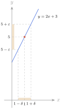
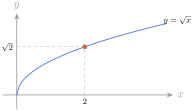
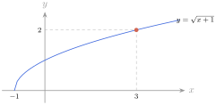
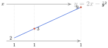
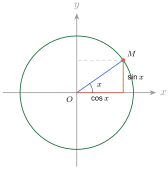
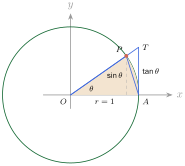

វត្ថុបំណង
1. លីមីតនៃអនុគមន៍ត្រង់ចំនួនកំណត់និងអនន្ត
1.1. លីមីតនៃអនុគមន៍ត្រង់ចំនួនកំណត់
ឧទាហរណ៍ 1 : \(\displaystyle f\) ជាអនុគមន៍កំណត់ចំពោះ \(\displaystyle x \in \mathbb{R} - \{1\}\) ដោយ \(\displaystyle f(x) = \dfrac{2x^2 + x - 3}{x - 1}\) ។
ចំពោះ \(\displaystyle x \neq 1\) គេបាន \(\displaystyle f(x) = \dfrac{(2x + 3)(x - 1)}{x - 1} = 2x + 3\) ។
គេមាន
| \(\displaystyle x\) ខិតជិត \(\displaystyle 1\) ពីខាងឆ្វេង | \(\displaystyle x\) ខិតជិត \(\displaystyle 1\) ពីខាងស្តាំ | ||||||||
| \(\displaystyle x\) | \(\displaystyle 0.9\) | \(\displaystyle 0.99\) | \(\displaystyle 0.999\) | \(\displaystyle 0.9999\) | \(\displaystyle 1\) | \(\displaystyle 1.0001\) | \(\displaystyle 1.001\) | \(\displaystyle 1.01\) | \(\displaystyle 1.1\) |
| \(\displaystyle f(x)\) | \(\displaystyle 4.8\) | \(\displaystyle 4.98\) | \(\displaystyle 4.998\) | \(\displaystyle 4.9998\) | \(\displaystyle 5.0002\) | \(\displaystyle 5.002\) | \(\displaystyle 5.02\) | \(\displaystyle 5.2\) | |
| \(\displaystyle f(x)\) ខិតជិត \(\displaystyle 5\) ពីខាងឆ្វេង | \(\displaystyle f(x)\) ខិតជិត \(\displaystyle 5\) ពីខាងស្តាំ | ||||||||
តាមតារាងតម្លៃលេខ បើ \(\displaystyle x\) ខិតជិត \(\displaystyle 1\) ពីខាងឆ្វេង និង \(\displaystyle 1\) ពីខាងស្តាំ នោះ \(\displaystyle f(x)\) ខិតជិត \(\displaystyle 5\) ។ គេថា អនុគមន៍ \(\displaystyle f\) មានលីមីត \(\displaystyle 5\) កាលណា \(\displaystyle x\) ខិតជិត \(\displaystyle 1\) ។
គេកំណត់សរសេរ \(\displaystyle \lim_{x \to 1} f(x) = \lim_{x \to 1} (2x + 3) = 5\) ។
ម្យ៉ាងទៀត \(\displaystyle x\) ខិតជិត \(\displaystyle 1\) កាលណា \(\displaystyle |x - 1|\) មានតម្លៃតូចជាងគ្រប់ចំនួនវិជ្ជមាន ។ មានន័យថា \(\displaystyle x\) ស្ថិតនៅក្នុងចន្លោះមួយដែលមានប្រវែងស្ទើរតែសូន្យដែលមាន \(\displaystyle 1\) ចំណុចកណ្តាល ។
ចម្ងាយរវាង \(\displaystyle f(x)\) និង \(\displaystyle 5\) អាចតូចបំផុតតាមលក្ខខណ្ឌនៃ \(\displaystyle x\) ខិតជិត \(\displaystyle 1\) ។ ឧបមាថា \(\displaystyle x\) ខិតជិត \(\displaystyle 1\) នោះ គេបាន
- បើ \(\displaystyle |x - 1| < 0.1\) នោះ \(\displaystyle |f(x) - 5| < 0.2\)
- បើ \(\displaystyle |x - 1| < 0.01\) នោះ \(\displaystyle |f(x) - 5| < 0.02\)
- បើ \(\displaystyle |x - 1| < 0.001\) នោះ \(\displaystyle |f(x) - 5| < 0.002\)
ជាទូទៅ តាង \(\displaystyle 0.2, 0.02, 0.002, \dots\) ដោយ \(\displaystyle \varepsilon\) (អ៊ិបស៊ីឡោន) ។
គេមាន \(\displaystyle |f(x) - 5| = |(2x + 3 - 5)| = 2|x - 1|\) ។
\(\displaystyle |f(x) - 5| < \varepsilon\) នាំឱ្យ \(\displaystyle 2|x - 1| < \varepsilon\) ឬ \(\displaystyle |x - 1| < \dfrac{\varepsilon}{2}\) ។

បើគេតាង \(\displaystyle \delta\) (ដែលតា) ដែល \(\displaystyle \delta = \dfrac{\varepsilon}{2}\) នោះគេបាន \(\displaystyle \varepsilon > 0\) មាន \(\displaystyle \delta > 0\) ដែល \(\displaystyle |x - 1| < \delta\) នាំឱ្យ \(\displaystyle |f(x) - 5| < \varepsilon\) ។ គេថា \(\displaystyle f(x)\) ខិតជិត \(\displaystyle 5\) ឬមានលីមីត \(\displaystyle 5\) កាលណា \(\displaystyle x\) ខិតជិត \(\displaystyle 1\) ។ គេកំណត់សរសេរ \(\displaystyle \lim_{x \to 1} f(x) = 5\) ។
និយមន័យ : អនុគមន៍ \(\displaystyle f\) មានលីមីតស្មើនឹង \(\displaystyle L\) កាលណា \(\displaystyle x\) ខិតជិត \(\displaystyle a\) បើគ្រប់ចំនួន \(\displaystyle \varepsilon > 0\) មានចំនួន \(\displaystyle \delta > 0\) ដែល \(\displaystyle 0 < |x - a| < \delta\) នាំឱ្យ \(\displaystyle |f(x) - L| < \varepsilon\) ។ គេសរសេរ \(\displaystyle \lim_{x \to a} f(x) = L\) ។
ឧទាហរណ៍ 2 : គេមានអនុគមន៍ \(\displaystyle f\) កំណត់ដោយ \(\displaystyle f(x) = \dfrac{3}{x - 2}\) ។ អនុគមន៍កំណត់ចំពោះគ្រប់ \(\displaystyle x \in \mathbb{R} - \{2\}\) ។ ពិនិត្យមើលតារាងតម្លៃលេខខាងក្រោម ៖
| \(\displaystyle x\) ខិតជិត \(\displaystyle 2\) ពីខាងឆ្វេង | \(\displaystyle x\) ខិតជិត \(\displaystyle 2\) ពីខាងស្តាំ | ||||||||
| \(\displaystyle x\) | \(\displaystyle 1.5\) | \(\displaystyle 1.9\) | \(\displaystyle 1.99\) | \(\displaystyle 1.999\) | \(\displaystyle 2\) | \(\displaystyle 2.001\) | \(\displaystyle 2.01\) | \(\displaystyle 2.1\) | \(\displaystyle 2.5\) |
| \(\displaystyle f(x)\) | \(\displaystyle -6\) | \(\displaystyle -30\) | \(\displaystyle -300\) | \(\displaystyle -3000\) | \(\displaystyle 3000\) | \(\displaystyle 300\) | \(\displaystyle 30\) | \(\displaystyle 6\) | |
| \(\displaystyle f(x)\) តូចទៅៗគ្មានទីបញ្ចប់ | \(\displaystyle f(x)\) ធំទៅៗគ្មានទីបញ្ចប់ | ||||||||
តាមតារាងតម្លៃលេខ គេសង្កេតឃើញថា \(\displaystyle f(x)\) មានតម្លៃអវិជ្ជមានកាន់តែតូចទៅគ្មានទីបញ្ចប់កាលណា \(\displaystyle x\) ខិតជិត \(\displaystyle 2\) ពីខាងឆ្វេង និង \(\displaystyle f(x)\) មានតម្លៃវិជ្ជមាន ហើយកាន់តែធំទៅៗគ្មានទីបញ្ចប់កាលណា \(\displaystyle x\) ខិតជិត \(\displaystyle 2\) ពីខាងស្តាំ ។
គេសរសេរ \(\displaystyle \lim_{x \to 2^-} f(x) = \lim_{x \to 2^-} \dfrac{3}{x - 2} = -\infty\) និង \(\displaystyle \lim_{x \to 2^+} f(x) = \lim_{x \to 2^+} \dfrac{3}{x - 2} = +\infty\) ។ ដូច្នេះតម្លៃនៃ \(\displaystyle f(x)\) កើនឬចុះគ្មានទីបញ្ចប់ កាលណា \(\displaystyle x\) ខិតជិត \(\displaystyle a\) លីមីត \(\displaystyle f\) ហៅថា លីមីតអនន្ត ។
និយមន័យ : គេថាអនុគមន៍ \(\displaystyle f\) ខិតទៅជិត \(\displaystyle +\infty\) ឬ \(\displaystyle -\infty\) កាលណា \(\displaystyle x\) ខិតជិត \(\displaystyle a\) បើចំពោះគ្រប់ចំនួន \(\displaystyle M > 0\) មាន \(\displaystyle \delta > 0\) ដែល \(\displaystyle 0 < |x - a| < \delta\) នាំឱ្យ \(\displaystyle f(x) > M\) ឬ \(\displaystyle f(x) < -M\) ។ គេសរសេរ \(\displaystyle \lim_{x \to a} f(x) = +\infty\) ឬ \(\displaystyle \lim_{x \to a} f(x) = -\infty\) ។
លំហាត់គំរូ 1 : \(\displaystyle f\) ជាអនុគមន៍កំណត់ដោយ \(\displaystyle f(x) = 2 + 5x\) ។ គេដឹងថា \(\displaystyle \lim_{x \to -2} (2 + 5x) = -8\) ។ រកចំនួន \(\displaystyle \alpha > 0\) ដោយស្គាល់ចំនួន \(\displaystyle \varepsilon = 0.002\) ដែល \(\displaystyle 0 < |x + 2| < \alpha\) នាំឱ្យ \(\displaystyle |f(x) - (-8)| < \varepsilon\) ។
ដំណោះស្រាយ : គេមាន \(\displaystyle |f(x) - (-8)| < 0.002 \iff |2 + 5x + 8| < 0.002 \iff |5x + 10| < 0.002\)
\(\displaystyle 5|x + 2| < 0.002 \iff |x + 2| < \dfrac{0.002}{5} = 0.0004 = \alpha\)
ដូច្នេះ \(\displaystyle \alpha = 0.0004\) ។
លំហាត់គំរូ 2 : គេមានអនុគមន៍ \(\displaystyle f\) កំណត់ដោយ \(\displaystyle f(x) = \dfrac{2x + 1}{x - 1}\) ។ បង្ហាញថា \(\displaystyle \lim_{x \to 1^+} f(x) = +\infty\) ។
ដំណោះស្រាយ : \(\displaystyle f(x) = \dfrac{2x + 1}{x - 1} = 2 + \dfrac{3}{x - 1}\) កំណត់ចំនួន \(\displaystyle M > 0\) ដែល \(\displaystyle f(x) > M\)
ដើម្បីឱ្យ \(\displaystyle f(x) > M\) គេគ្រាន់តែឱ្យ \(\displaystyle \dfrac{3}{x - 1} > M\) ។
\(\displaystyle \dfrac{3}{x - 1} > M\) និង \(\displaystyle x > 1\) នាំឱ្យ \(\displaystyle 0 < x - 1 < \dfrac{3}{M}\) ឬ \(\displaystyle 1 < x < \dfrac{3}{M} + 1\)
ចំពោះគ្រប់ចំនួន \(\displaystyle M > 0\) មាន \(\displaystyle \alpha = \dfrac{3}{M} > 0\) ដែល \(\displaystyle 0 < |x - 1| < \alpha\) នាំឱ្យ \(\displaystyle \lim_{x \to 1^+} f(x) = +\infty\) ។
ប្រតិបត្តិ : ដោយប្រើនិយមន័យ ចូរបង្ហាញថា
- ក. \(\displaystyle \lim_{x \to 2} \sqrt{x} = \sqrt{2}\)
- ខ. \(\displaystyle \lim_{x \to 0^-} \dfrac{1}{x} = -\infty\) ។
ចម្លើយ :
- ក. គ្រប់ \(\displaystyle \varepsilon > 0\) គេរើស \(\displaystyle \delta = \min\left(1, \varepsilon(\sqrt{2}+1)\right) > 0\) ។ កាលណា \(\displaystyle 0 < |x - 2| < \delta\) នោះ \(\displaystyle x > 1\) និង \(\displaystyle |\sqrt{x} - \sqrt{2}| = \dfrac{|x - 2|}{\sqrt{x} + \sqrt{2}} < \dfrac{\delta}{1 + \sqrt{2}} \le \varepsilon\) ។
- ខ. គ្រប់ \(\displaystyle M > 0\) គេរើស \(\displaystyle \delta = \dfrac{1}{M} > 0\) ។ កាលណា \(\displaystyle -\delta < x < 0\) នោះ \(\displaystyle \dfrac{1}{x} < -M\) ដូច្នេះ \(\displaystyle \lim_{x \to 0^-} \dfrac{1}{x} = -\infty\) ។
1.2. លីមីតនៃអនុគមន៍នៅត្រង់អនន្ត
ឧទាហរណ៍ 1 : គេមានអនុគមន៍ \(\displaystyle y = f(x) = \dfrac{1}{x}\) និងតារាងតម្លៃលេខដូចខាងក្រោម ៖
ក.
| \(\displaystyle x\) | \(\displaystyle 10\) | \(\displaystyle 100\) | \(\displaystyle 1000\) | \(\displaystyle 10000\) |
| \(\displaystyle y\) | \(\displaystyle 0.1\) | \(\displaystyle 0.01\) | \(\displaystyle 0.001\) | \(\displaystyle 0.0001\) |
ខ.
| \(\displaystyle x\) | \(\displaystyle -10\) | \(\displaystyle -100\) | \(\displaystyle -1000\) | \(\displaystyle -10000\) |
| \(\displaystyle y\) | \(\displaystyle -0.1\) | \(\displaystyle -0.01\) | \(\displaystyle -0.001\) | \(\displaystyle -0.0001\) |
តាមតារាងតម្លៃលេខ
- ក. គេសង្កេតឃើញថា កាលណា \(\displaystyle x\) យកតម្លៃវិជ្ជមាន ហើយកាន់តែធំទៅៗគ្មានទីបញ្ចប់ នោះ \(\displaystyle \dfrac{1}{x}\) មានតម្លៃវិជ្ជមាន ហើយកាន់តែតូចទៅៗស្ទើរតែសូន្យ ។ ដូច្នេះ \(\displaystyle \lim_{x \to +\infty} \dfrac{1}{x} = 0\) ។
- ខ. គេសង្កេតឃើញថា កាលណា \(\displaystyle x\) យកតម្លៃអវិជ្ជមាន ហើយកាន់តែតូចទៅៗគ្មានទីបញ្ចប់ នោះ \(\displaystyle \dfrac{1}{x}\) មានតម្លៃអវិជ្ជមាន ហើយកាន់តែជិតស្មើនឹងសូន្យ ។ ដូច្នេះ \(\displaystyle \lim_{x \to -\infty} \dfrac{1}{x} = 0\) ។
និយមន័យ : អនុគមន៍ \(\displaystyle f\) មានលីមីតស្មើនឹង \(\displaystyle L\) កាលណា \(\displaystyle x\) ខិតទៅ \(\displaystyle +\infty\) ឬ \(\displaystyle -\infty\) បើចំពោះគ្រប់ចំនួន \(\displaystyle \varepsilon > 0\) មាន \(\displaystyle N > 0\) ដែល \(\displaystyle x > N\) ឬ \(\displaystyle x < -N\) នាំឱ្យ \(\displaystyle |f(x) - L| < \varepsilon\) ។ គេសរសេរ \(\displaystyle \lim_{x \to +\infty} f(x) = L\) ឬ \(\displaystyle \lim_{x \to -\infty} f(x) = L\) ។
ឧទាហរណ៍ 2 : បង្ហាញថា អនុគមន៍ \(\displaystyle y = x^2\) ខិតទៅ \(\displaystyle +\infty\) កាលណា \(\displaystyle x\) ខិតទៅ \(\displaystyle +\infty\) ។
គេស្រាយបញ្ជាក់ថា គ្រប់ \(\displaystyle M > 0\) មាន \(\displaystyle N > 0\) ដែល \(\displaystyle x > N\) នាំឱ្យ \(\displaystyle x^2 > M\) ។ កំណត់យក \(\displaystyle M > 0\) ដែល \(\displaystyle x^2 > M\) ដើម្បីឱ្យបាន \(\displaystyle x^2 > M\) គេត្រូវយក \(\displaystyle x > \sqrt{M}\) ។ ដូច្នេះ គ្រប់ \(\displaystyle M > 0\) មាន \(\displaystyle N = \sqrt{M}\) ដែល \(\displaystyle x > N\) នាំឱ្យ \(\displaystyle x^2 > M\) ។ តាមនិយមន័យ គេបាន \(\displaystyle \lim_{x \to +\infty} y = +\infty\) ។
និយមន័យ :
- អនុគមន៍ \(\displaystyle f\) មានលីមីត \(\displaystyle +\infty\) កាលណា \(\displaystyle x\) ខិតទៅ \(\displaystyle +\infty\) បើចំពោះគ្រប់ \(\displaystyle M > 0\) មាន \(\displaystyle N > 0\) ដែល \(\displaystyle x > N\) នាំឱ្យ \(\displaystyle f(x) > M\) ។ គេសរសេរ \(\displaystyle \lim_{x \to +\infty} f(x) = +\infty\) ។
- អនុគមន៍ \(\displaystyle f\) មានលីមីត \(\displaystyle +\infty\) កាលណា \(\displaystyle x\) ខិតទៅ \(\displaystyle -\infty\) បើចំពោះគ្រប់ \(\displaystyle M > 0\) មាន \(\displaystyle N > 0\) ដែល \(\displaystyle x < -N\) នាំឱ្យ \(\displaystyle f(x) > M\) ។ គេសរសេរ \(\displaystyle \lim_{x \to -\infty} f(x) = +\infty\) ។
លំហាត់គំរូ 1 : គេមានអនុគមន៍ \(\displaystyle f\) កំណត់ដោយ \(\displaystyle f(x) = \dfrac{4x + 1}{2x + 1}\) បង្ហាញថា \(\displaystyle \lim_{x \to +\infty} f(x) = 2\) និង \(\displaystyle \lim_{x \to -\infty} f(x) = 2\) ។
ដំណោះស្រាយ : កាលណា \(\displaystyle x \neq -\dfrac{1}{2}\) គេបាន \(\displaystyle f(x) - 2 = \dfrac{4x + 1}{2x + 1} - 2 = \dfrac{-1}{2x + 1}\) នាំឱ្យ \(\displaystyle |f(x) - 2| = \dfrac{1}{|2x + 1|}\) ។
ចំពោះ \(\displaystyle |f(x) - 2| = \dfrac{1}{|2x + 1|} < \varepsilon\) (\(\displaystyle \varepsilon > 0\)) នាំឱ្យ \(\displaystyle |2x + 1| > \dfrac{1}{\varepsilon}\)
\(\displaystyle \begin{cases} 2x + 1 > \dfrac{1}{\varepsilon} \\ 2x + 1 < -\dfrac{1}{\varepsilon} \end{cases}\) ឬ \(\displaystyle \begin{cases} x > \dfrac{1 - \varepsilon}{2\varepsilon} \\ x < -\dfrac{1 + \varepsilon}{2\varepsilon} \end{cases}\) ឬ \(\displaystyle \begin{cases} x > \dfrac{1}{2\varepsilon} - \dfrac{1}{2} \\ x < -\dfrac{1}{2\varepsilon} - \dfrac{1}{2} \end{cases}\) ឬ \(\displaystyle \begin{cases} x > \dfrac{1}{2\varepsilon} \\ x < -\left(\dfrac{1}{2\varepsilon} + \dfrac{1}{2}\right) \end{cases}\)
ពីព្រោះ \(\displaystyle \dfrac{1}{2\varepsilon} > \dfrac{1}{2\varepsilon} - \dfrac{1}{2}\) ។ តូចនាំឱ្យ \(\displaystyle \dfrac{1}{2\varepsilon}\) ឬ \(\displaystyle \dfrac{1}{2\varepsilon} + \dfrac{1}{2}\) ធំ ។ គេបានគ្រប់ \(\displaystyle \varepsilon > 0\) មាន \(\displaystyle A = \dfrac{1}{2\varepsilon}\) ឬ \(\displaystyle A = \dfrac{1}{2\varepsilon} + \dfrac{1}{2}\) ដែល \(\displaystyle x > A\) ឬ \(\displaystyle x < -A\) នាំឱ្យ \(\displaystyle |f(x) - 2| < \varepsilon\) ។
ដូច្នេះ \(\displaystyle \lim_{x \to +\infty} f(x) = 2\) និង \(\displaystyle \lim_{x \to -\infty} f(x) = 2\) ។
លំហាត់គំរូ 2 : គេមានអនុគមន៍ \(\displaystyle f\) កំណត់ដោយ \(\displaystyle f(x) = x^2 - 3x + 10\) ។ ដោយសរសេរត្រីធានេះរាងកាណូនិក ។ បង្ហាញថាគេអាចរកចំនួន \(\displaystyle A > 0\) ដែល \(\displaystyle |x| > A\) នាំឱ្យ \(\displaystyle f(x) > 10^3\) រួចរកលីមីត \(\displaystyle \lim_{x \to \pm\infty} f(x)\) ។
ដំណោះស្រាយ : គេមាន \(\displaystyle f(x) = x^2 - 3x + 10\) ។
គេសរសេរ \(\displaystyle f(x)\) ជារាងកាណូនិក \(\displaystyle f(x) = \left(x - \dfrac{3}{2}\right)^2 + \dfrac{31}{4}\) ។
បើ \(\displaystyle f(x) > 10^3\) ឬ \(\displaystyle \left(x - \dfrac{3}{2}\right)^2 + \dfrac{31}{4} > 10^3\)
គេបាន \(\displaystyle \left(x - \dfrac{3}{2}\right)^2 > \dfrac{3969}{4}\) ឬ \(\displaystyle \left|x - \dfrac{3}{2}\right| > \dfrac{63}{2}\) សមមូល \(\displaystyle x - \dfrac{3}{2} > \dfrac{63}{2}\) ឬ \(\displaystyle x - \dfrac{3}{2} < -\dfrac{63}{2}\)
គេបាន \(\displaystyle x > 33\) ឬ \(\displaystyle x < -30\) ។
ចំពោះ \(\displaystyle |x| > 33\) នោះ \(\displaystyle x > 33\) ឬ \(\displaystyle x < -33 < -30\) នាំឱ្យ \(\displaystyle f(x) > 1000\) ។
ដូច្នេះ \(\displaystyle \lim_{x \to +\infty} f(x) = +\infty\) និង \(\displaystyle \lim_{x \to -\infty} f(x) = +\infty\) ។
ប្រតិបត្តិ : បង្ហាញថា
- ក. \(\displaystyle \lim_{x \to +\infty} \dfrac{2x + 1}{x - 1} = 2\)
- ខ. \(\displaystyle \lim_{x \to +\infty} \dfrac{2x - x^2}{3x + 5} = -\infty\) ។
ចម្លើយ :
- ក. \(\displaystyle \left|\dfrac{2x + 1}{x - 1} - 2\right| = \dfrac{3}{|x - 1|} < \varepsilon\) ។ គ្រប់ \(\displaystyle \varepsilon > 0\) រើស \(\displaystyle N = 1 + \dfrac{3}{\varepsilon}\) នោះ \(\displaystyle x > N \implies \left|\dfrac{2x + 1}{x - 1} - 2\right| < \varepsilon\) ។
- ខ. ចំពោះ \(\displaystyle x > 5\) គេបាន \(\displaystyle \dfrac{2x - x^2}{3x + 5} = -\dfrac{x}{3} + \dfrac{11x}{3(3x+5)} < -\dfrac{x}{3} + \dfrac{11}{9}\) ។ គ្រប់ \(\displaystyle M > 0\) រើស \(\displaystyle N = \max\left(5, 3M + \dfrac{11}{3}\right)\) នោះ \(\displaystyle x > N \implies \dfrac{2x - x^2}{3x + 5} < -M\) ។
1.3. ប្រមាណវិធីលើលីមីត
បើ \(\displaystyle \lim_{x \to a} f(x) = L\), \(\displaystyle \lim_{x \to a} g(x) = M\), \(\displaystyle \lim_{x \to a} h(x) = N\) ហើយ \(\displaystyle L, M, N\) ជាចំនួនពិត ។ គេបាន
- \(\displaystyle \lim_{x \to a} [f(x) \pm g(x)] = L \pm M\) (ដែល \(\displaystyle a\) អាចជាចំនួនកំណត់ឬអនន្ត)
- \(\displaystyle \lim_{x \to a} [f(x) + g(x) - h(x)] = L + M - N\)
- \(\displaystyle \lim_{x \to a} kf(x) = kL\), \(\displaystyle k\) ជាចំនួនថេរ
- \(\displaystyle \lim_{x \to a} [f(x) \cdot g(x) \cdot h(x)] = L \cdot M \cdot N\)
- \(\displaystyle \lim_{x \to a} \dfrac{f(x)}{g(x)} = \dfrac{\lim_{x \to a} f(x)}{\lim_{x \to a} g(x)} = \dfrac{L}{M}\) ដែល \(\displaystyle M \neq 0\), \(\displaystyle g(a) \neq 0\)
- \(\displaystyle \lim_{x \to a} [f(x)]^n = L^n\) ដែល \(\displaystyle n\) ជាចំនួនគត់រ៉ឺឡាទីបវិជ្ជមាន ។
លំហាត់គំរូ 1 : គណនាលីមីតខាងក្រោម៖
- ក. \(\displaystyle \lim_{x \to -1} (3x^3 - 4x + 8)\)
- ខ. \(\displaystyle \lim_{x \to -4} 5x^3\)
- គ. \(\displaystyle \lim_{x \to 1} \dfrac{x^2 - 1}{x^2 - 3x + 2}\) ។
ដំណោះស្រាយ :
- ក. \(\displaystyle \lim_{x \to -1} (3x^3 - 4x + 8) = 3(\lim_{x \to -1} x)^3 - 4(\lim_{x \to -1} x) + \lim_{x \to -1} 8 = 3(-1)^3 - 4(-1) + 8 = 9\) ។
- ខ. \(\displaystyle \lim_{x \to -4} 5x^3 = 5(\lim_{x \to -4} x)^3 = 5(-4)^3 = -320\) ។
- គ. \(\displaystyle \lim_{x \to 1} \dfrac{x^2 - 1}{x^2 - 3x + 2}\) ដោយ \(\displaystyle \dfrac{x^2 - 1}{x^2 - 3x + 2} = \dfrac{(x - 1)(x + 1)}{(x - 1)(x - 2)} = \dfrac{x + 1}{x - 2}\) គេបាន \(\displaystyle \lim_{x \to 1} \dfrac{x^2 - 1}{x^2 - 3x + 2} = \dfrac{\lim_{x \to 1} (x + 1)}{\lim_{x \to 1} (x - 2)} = \dfrac{2}{-1} = -2\) ។
លំហាត់គំរូ 2 : កំណត់តម្លៃ \(\displaystyle a\) ដើម្បីឱ្យ \(\displaystyle \lim_{x \to 1} \dfrac{x^2 - ax + 1}{x - 1}\) ជាចំនួនថេរ ។ គណនាលីមីតនេះ ។
ដំណោះស្រាយ : ដោយ \(\displaystyle \lim_{x \to 1} (x - 1) = 0\) ដើម្បីឱ្យ \(\displaystyle \lim_{x \to 1} \dfrac{x^2 - ax + 1}{x - 1}\) ជាចំនួនថេរ លុះត្រាតែ \(\displaystyle \lim_{x \to 1} (x^2 - ax + 1) = 0\) ឬ \(\displaystyle 1^2 - a \cdot 1 + 1 = 0 \implies 2 - a = 0 \implies a = 2\)
\(\displaystyle \lim_{x \to 1} \dfrac{x^2 - ax + 1}{x - 1} = \lim_{x \to 1} \dfrac{x^2 - 2x + 1}{x - 1} = \lim_{x \to 1} \dfrac{(x - 1)^2}{x - 1} = \lim_{x \to 1} (x - 1) = 0\) ។
ប្រតិបត្តិ :
- ក. គណនាលីមីត \(\displaystyle \lim_{x \to 1} \dfrac{x^2 - 3x + 2}{x - 1}\)
- ខ. កំណត់តម្លៃ \(\displaystyle a\) និង \(\displaystyle b\) ដើម្បីបំពេញលក្ខខណ្ឌ \(\displaystyle \lim_{x \to -2} \dfrac{x^2 + ax - 6}{2x^2 + 3x - 2} = b\) ។
ចម្លើយ : ក. \(\displaystyle -1\) ខ. \(\displaystyle a = -1, b = 1\) ។
2. លីមីតនៃអនុគមន៍អសនិទាន
ឧទាហរណ៍ 1 : គេឱ្យអនុគមន៍ \(\displaystyle y = f(x) = \sqrt{x}\) និងតារាងតម្លៃលេខ
| \(\displaystyle x\) | \(\displaystyle 1.99\) | \(\displaystyle 1.999\) | \(\displaystyle 1.9999\) | \(\displaystyle 2.0001\) | \(\displaystyle 2.001\) | \(\displaystyle 2.01\) |
| \(\displaystyle y = \sqrt{x}\) | \(\displaystyle 1.4106\) | \(\displaystyle 1.4138\) | \(\displaystyle 1.4141\) | \(\displaystyle 1.4142\) | \(\displaystyle 1.4145\) | \(\displaystyle 1.4177\) |

តាមតារាងតម្លៃលេខនិងក្រាប បើ \(\displaystyle x\) ខិតជិត \(\displaystyle 2\) ខាងឆ្វេង និងខិតជិត \(\displaystyle 2\) ខាងស្តាំ នោះ \(\displaystyle f(x)\) ខិតជិត \(\displaystyle \sqrt{2}\) ។ គេថា \(\displaystyle f(x)\) មានលីមីតស្មើនឹង \(\displaystyle \sqrt{2}\) កាលណា \(\displaystyle x\) ខិតជិត \(\displaystyle 2\) ។ គេកំណត់សរសេរ \(\displaystyle \lim_{x \to 2} f(x) = \lim_{x \to 2} \sqrt{x} = \sqrt{2}\) ។
ឧទាហរណ៍ 2 : គណនា \(\displaystyle \lim_{x \to 3} \sqrt{x + 1}\) ។

តាមក្រាបគេឃើញថា កាលណា \(\displaystyle x \to 3\) នោះ \(\displaystyle \sqrt{x + 1} \to 2\) ដូច្នេះ \(\displaystyle \lim_{x \to 3} \sqrt{x + 1} = 2\) ។
- \(\displaystyle \lim_{x \to a} \sqrt[n]{x} = \sqrt[n]{a}\) ចំពោះ \(\displaystyle a \ge 0\) និង \(\displaystyle n \in \mathbb{N}\), \(\displaystyle n \ge 2\)
- \(\displaystyle \lim_{x \to a} \sqrt[n]{x} = \sqrt[n]{a}\) ចំពោះ \(\displaystyle a < 0\) និង \(\displaystyle n\) ជាចំនួនគត់ធម្មជាតិសេសធំជាង \(\displaystyle 2\)
- \(\displaystyle \lim_{x \to a} \sqrt[n]{f(x)} = \sqrt[n]{\lim_{x \to a} f(x)} = \sqrt[n]{L} = L^{\frac{1}{n}}\) (ដោយ \(\displaystyle \lim_{x \to a} f(x) = L\)) បើ \(\displaystyle L \ge 0\) និង \(\displaystyle n \in \mathbb{N}\), \(\displaystyle n \ge 2\) បើ \(\displaystyle L < 0\) និង \(\displaystyle n\) ជាចំនួនគត់សេសធំជាង \(\displaystyle 2\) ។
លំហាត់គំរូ : គណនា
- ក. \(\displaystyle \lim_{x \to 4} \sqrt[3]{\dfrac{x}{-7x + 1}} = \sqrt[3]{\lim_{x \to 4} \dfrac{x}{-7x + 1}} = \sqrt[3]{-\dfrac{4}{27}} = -\dfrac{\sqrt[3]{4}}{3}\)
- ខ. \(\displaystyle \lim_{x \to 2} \sqrt{\dfrac{x^3 + 2x + 3}{x^2 + 5}} = \sqrt{\lim_{x \to 2} \dfrac{x^3 + 2x + 3}{x^2 + 5}} = \sqrt{\dfrac{2^3 + 2 \times 2 + 3}{2^2 + 5}} = \dfrac{\sqrt{8 + 4 + 3}}{9} = \dfrac{\sqrt{15}}{3}\)
- គ. \(\displaystyle \lim_{x \to 1^+} \sqrt{\dfrac{x^2 - 2x + 1}{x - 1}} = \sqrt{\lim_{x \to 1^+} \dfrac{(x - 1)^2}{x - 1}} = \sqrt{\lim_{x \to 1^+} (x - 1)} = 0\) ។
ប្រតិបត្តិ : គណនា
- ក. \(\displaystyle \lim_{x \to 4} \sqrt[3]{\dfrac{x^2 - 3x + 4}{2x^2 - x - 1}}\)
- ខ. \(\displaystyle \lim_{x \to -3^-} \sqrt{\dfrac{x^2 - 9}{2x^2 + 7x + 3}}\) ។
ចម្លើយ : ក. \(\displaystyle \dfrac{2}{3}\) ខ. \(\displaystyle \sqrt{\dfrac{6}{5}}\) ។
3. លីមីតនៃអនុគមន៍បណ្តាក់
3.1. អនុគមន៍បណ្តាក់
អនុគមន៍ \(\displaystyle f\) និង \(\displaystyle g\) កំណត់លើ \(\displaystyle \mathbb{R}\) ដោយ \(\displaystyle f : x \mapsto f(x) = 2x - 1\) និង \(\displaystyle g : x \mapsto g(x) = x^2\) ។
ដ្យាក្រាមខាងក្រោមនឹងបង្ហាញពីផ្នែកខ្លះនៃទំនាក់ទំនងរវាងអនុគមន៍ \(\displaystyle f\) និង \(\displaystyle g\)

គេបាន
គេបានអនុគមន៍ថ្មីមួយដែលធាតុដើម \(\displaystyle x\) ឱ្យរូបភាព \(\displaystyle g[f(x)]\) ។ អនុគមន៍ថ្មី \(\displaystyle g \circ f\) នេះហៅថា អនុគមន៍បណ្តាក់នៃអនុគមន៍ \(\displaystyle f\) និង \(\displaystyle g\) ។
\(\displaystyle f\) និង \(\displaystyle g\) ជាអនុគមន៍ពីរ ។ អនុគមន៍បណ្តាក់នៃអនុគមន៍ \(\displaystyle f\) និង \(\displaystyle g\) ដែលតាងដោយ \(\displaystyle g \circ f\) គឺជាអនុគមន៍កំណត់ដោយ \(\displaystyle (g \circ f)(x) = g[f(x)]\) ។
លំហាត់គំរូ : អនុគមន៍ \(\displaystyle f(x) = x^2 + 1\) និង \(\displaystyle g(x) = \dfrac{1}{x}\) ដែលកំណត់ចំពោះ \(\displaystyle x \neq 0\) ។ គណនា \(\displaystyle (f \circ g)(x)\) និង \(\displaystyle (g \circ f)(x)\) ។ តើ \(\displaystyle (f \circ g)(x)\) និង \(\displaystyle (g \circ f)(x)\) ស្មើគ្នាឬទេ?
ដំណោះស្រាយ : គេបាន \(\displaystyle (f \circ g)(x) : x \to g(x) \to f[g(x)]\) \(\displaystyle (f \circ g)(x) = f[g(x)] = f\left(\dfrac{1}{x}\right) = \left(\dfrac{1}{x}\right)^2 + 1 = \dfrac{1}{x^2} + 1\)
ម្យ៉ាងទៀត \(\displaystyle (g \circ f)(x) : x \to f(x) \to g[f(x)]\) គេបាន \(\displaystyle (g \circ f)(x) = g[f(x)] = \dfrac{1}{f(x)} = \dfrac{1}{x^2 + 1}\)
គេឃើញថា \(\displaystyle (g \circ f)(x) \neq (f \circ g)(x)\) ។
ប្រតិបត្តិ : គេមាន \(\displaystyle f(x) = 3x + 1\) និង \(\displaystyle g(x) = x^2\) ។ គណនា \(\displaystyle (f \circ g)(x)\) និង \(\displaystyle (g \circ f)(x)\) ។ តើ \(\displaystyle (f \circ g)(x)\) និង \(\displaystyle (g \circ f)(x)\) ស្មើគ្នាឬទេ?
ចម្លើយ : \(\displaystyle (f \circ g)(x) = 3x^2 + 1\), \(\displaystyle (g \circ f)(x) = (3x + 1)^2\), \(\displaystyle (f \circ g)(x) \neq (g \circ f)(x)\) ។
3.2. លីមីតនៃអនុគមន៍បណ្តាក់
ឧទាហរណ៍ 1 : គេមានអនុគមន៍ \(\displaystyle y = (x + 1)^2\) កំណត់ដោយ \(\displaystyle x \xrightarrow{f} x + 1 \xrightarrow{g} (x + 1)^2\), \(\displaystyle y = g[f(x)] = (x + 1)^2\)
| \(\displaystyle x\) | \(\displaystyle -0.01\) | \(\displaystyle -0.001\) | \(\displaystyle 0\) | \(\displaystyle 0.001\) | \(\displaystyle 0.01\) |
| \(\displaystyle f(x) = x + 1\) | \(\displaystyle 0.99\) | \(\displaystyle 0.999\) | \(\displaystyle 1\) | \(\displaystyle 1.001\) | \(\displaystyle 1.01\) |
| \(\displaystyle g[f(x)] = (x + 1)^2\) | \(\displaystyle 0.9801\) | \(\displaystyle 0.998\) | \(\displaystyle 1\) | \(\displaystyle 1.002\) | \(\displaystyle 1.02\) |
តាមតារាងតម្លៃលេខ គេសង្កេតឃើញថា បើ \(\displaystyle x\) យកតម្លៃកាន់តែជិត \(\displaystyle 0\) ពីខាងឆ្វេង និងពីខាងស្តាំ នោះ \(\displaystyle y = g[f(x)]\) យកតម្លៃកាន់តែជិត \(\displaystyle 1\) ។ គេថាអនុគមន៍បណ្តាក់ \(\displaystyle y = g[f(x)]\) មានលីមីត \(\displaystyle 1\) កាលណា \(\displaystyle x\) ខិតជិត \(\displaystyle 0\) គេបាន \(\displaystyle \lim_{x \to 0} (x + 1)^2 = 1\) ។
ឧទាហរណ៍ 2 : គណនា \(\displaystyle \lim_{x \to 4} \sqrt[3]{3x^2 - 21}\) ។
ដោយ \(\displaystyle \lim_{x \to 4} (3x^2 - 21) = 3 \times 16 - 21 = 27\) និង \(\displaystyle \lim_{x \to 27} \sqrt[3]{x} = \sqrt[3]{27} = 3\)
ដូច្នេះ \(\displaystyle \lim_{x \to 4} \sqrt[3]{3x^2 - 21} = 3\) ។
បើ \(\displaystyle f\) និង \(\displaystyle g\) ជាអនុគមន៍ដែលមានលីមីត \(\displaystyle \lim_{x \to a} g(x) = L\) និង \(\displaystyle \lim_{x \to L} f(x) = f(L)\) នោះ \(\displaystyle \lim_{x \to a} f[g(x)] = f(L)\) ។
លំហាត់គំរូ 1 : គណនា \(\displaystyle \lim_{x \to +\infty} \sqrt{\dfrac{2x - 3}{x + 2}}\) ។
ដំណោះស្រាយ : ដោយ \(\displaystyle X = \lim_{x \to +\infty} \dfrac{2x - 3}{x + 2} = \lim_{x \to +\infty} \dfrac{x\left(2 - \dfrac{3}{x}\right)}{x\left(1 + \dfrac{2}{x}\right)} = \lim_{x \to +\infty} \dfrac{2 - \dfrac{3}{x}}{1 + \dfrac{2}{x}} = 2\)
ដូច្នេះ \(\displaystyle \lim_{x \to +\infty} \sqrt{\dfrac{2x - 3}{x + 2}} = \lim_{X \to 2} \sqrt{X} = \sqrt{2}\) ។
លំហាត់គំរូ 2 : គណនា \(\displaystyle \lim_{\substack{x \to 2 \\ x < 2}} \left(\dfrac{x + 1}{x - 2}\right)^2\) ។
ដំណោះស្រាយ : ដោយ \(\displaystyle X = \lim_{\substack{x \to 2 \\ x < 2}} \dfrac{x + 1}{x - 2} = -\infty\) ព្រោះ \(\displaystyle \lim_{x \to 2^-} (x + 1) = 3\) និង \(\displaystyle \lim_{x \to 2^-} (x - 2) = 0^-\)
ដូច្នេះ \(\displaystyle \lim_{\substack{x \to 2 \\ x < 2}} \left(\dfrac{x + 1}{x - 2}\right)^2 = \lim_{X \to -\infty} X^2 = +\infty\) ។
ប្រតិបត្តិ : គណនា
- ក. \(\displaystyle \lim_{x \to -4} \sqrt[3]{3x + 4}\)
- ខ. \(\displaystyle \lim_{x \to 5} \dfrac{1}{\sqrt[3]{x^2 + 2}}\) ។
ចម្លើយ : ក. \(\displaystyle \lim_{x \to -4} \sqrt[3]{3x + 4} = -2\) ខ. \(\displaystyle \lim_{x \to 5} \dfrac{1}{\sqrt[3]{x^2 + 2}} = \dfrac{1}{3}\) ។
3.3. លីមីតតាមការប្រៀបធៀប
បើអនុគមន៍ \(\displaystyle f, g\) និងចំនួនពិត \(\displaystyle A\) ដែល \(\displaystyle \lim_{x \to +\infty} g(x) = +\infty\) និង \(\displaystyle f(x) \ge g(x)\) ចំពោះ \(\displaystyle x \ge A\) នោះ \(\displaystyle \lim_{x \to +\infty} f(x) = +\infty\) ។
ឧទាហរណ៍ 1 : គេមាន \(\displaystyle f(x) = x - \sqrt{x}\) ចំពោះ \(\displaystyle x \ge 4\) គេបាន \(\displaystyle x^2 \ge 4x\) នោះ \(\displaystyle x \ge 2\sqrt{x}\) ហើយ \(\displaystyle f(x) = x - \sqrt{x} \ge \sqrt{x}\) តែ \(\displaystyle \lim_{x \to +\infty} \sqrt{x} = +\infty\) ។ ដូច្នេះ \(\displaystyle \lim_{x \to +\infty} f(x) = +\infty\) ។
បើអនុគមន៍ \(\displaystyle f, g\) និងចំនួនពិត \(\displaystyle A\) ដែល \(\displaystyle \lim_{x \to +\infty} g(x) = -\infty\) និង \(\displaystyle f(x) \le g(x)\) ចំពោះ \(\displaystyle x \ge A\) នោះ \(\displaystyle \lim_{x \to +\infty} f(x) = -\infty\) ។
ឧទាហរណ៍ 2 : គេមានអនុគមន៍ \(\displaystyle f\) ដែល \(\displaystyle f(x) < -x + 1\) ចំពោះគ្រប់ \(\displaystyle x \in \mathbb{R}\) ដោយ \(\displaystyle \lim_{x \to +\infty} (-x + 1) = -\infty\) នោះគេបាន \(\displaystyle \lim_{x \to +\infty} f(x) = -\infty\) ។
បើអនុគមន៍ \(\displaystyle f, g, h\) និងចំនួនពិត \(\displaystyle A\) ដែល \(\displaystyle \lim_{x \to +\infty} g(x) = \lim_{x \to +\infty} h(x) = \lambda\) និង \(\displaystyle g(x) \le f(x) \le h(x)\) ចំពោះគ្រប់ \(\displaystyle x \ge A\) នោះ \(\displaystyle \lim_{x \to +\infty} f(x) = \lambda\) ។
ឧទាហរណ៍ 3 : គេមាន \(\displaystyle f(x) = \sqrt{x + 1} - \sqrt{x}\) ។ បើ \(\displaystyle x \ge 0\) នោះ \(\displaystyle f(x) = \sqrt{x + 1} - \sqrt{x} = \dfrac{\sqrt{x + 1}^2 - \sqrt{x}^2}{\sqrt{x + 1} + \sqrt{x}} = \dfrac{1}{\sqrt{x + 1} + \sqrt{x}}\) នោះ \(\displaystyle \sqrt{x} \le \sqrt{x + 1}\) នាំឱ្យ \(\displaystyle 2\sqrt{x} \le \sqrt{x + 1} + \sqrt{x} \le 2\sqrt{x + 1}\) ។ គេបាន \(\displaystyle \dfrac{1}{2\sqrt{x + 1}} \le f(x) \le \dfrac{1}{2\sqrt{x}}\) តែ \(\displaystyle \lim_{x \to +\infty} \dfrac{1}{2\sqrt{x + 1}} = \lim_{x \to +\infty} \dfrac{1}{2\sqrt{x}} = 0\) ។ ដូច្នេះ \(\displaystyle \lim_{x \to +\infty} f(x) = 0\) ។
បើអនុគមន៍ \(\displaystyle f, g\) និងចំនួនពិត \(\displaystyle A\) ដែល \(\displaystyle \lim_{x \to +\infty} f(x) = \lambda\), \(\displaystyle \lim_{x \to +\infty} g(x) = \lambda'\) និង \(\displaystyle f(x) \le g(x)\) នោះចំពោះគ្រប់ \(\displaystyle x \ge A\) គេបាន \(\displaystyle \lambda \le \lambda'\) ។
សម្គាល់ : គេនឹងបានវិធាននិងរបៀបដូចគ្នា កាលណា \(\displaystyle x \to -\infty\) ដោយគ្រាន់តែជំនួស \(\displaystyle x \ge A\) ដោយ \(\displaystyle x \le A\) វិញ ។
4. លីមីតរាងមិនកំណត់
4.1. លីមីតដែលមានរាងមិនកំណត់ \(\displaystyle \frac{0}{0}\)
ឧទាហរណ៍ 1 : គណនា \(\displaystyle \lim_{x \to 2} \dfrac{x^3 - 8}{x - 2}\) ។
បើ \(\displaystyle x \to 2\) នោះ \(\displaystyle \lim_{x \to 2} \dfrac{x^3 - 8}{x - 2}\) មានរាងមិនកំណត់ \(\displaystyle \dfrac{0}{0}\) ព្រោះ \(\displaystyle \lim_{x \to 2} (x^3 - 8) = 0\) និង \(\displaystyle \lim_{x \to 2} (x - 2) = 0\) ។ ដូច្នេះ គេត្រូវបំបែកភាគយកនិងភាគបែងជាផលគុណកត្តា ហើយសម្រួលកត្តារួម រួចគណនាលីមីតនៃកន្សោមថ្មី ។
ប្រើសមភាព \(\displaystyle a^3 - b^3 = (a - b)(a^2 + ab + b^2)\)
គេមាន \(\displaystyle \dfrac{x^3 - 8}{x - 2} = \dfrac{(x - 2)(x^2 + 2x + 4)}{x - 2} = x^2 + 2x + 4\) បើ \(\displaystyle (x \neq 2)\) ។
ដូច្នេះ \(\displaystyle \lim_{x \to 2} \dfrac{x^3 - 8}{x - 2} = \lim_{x \to 2} (x^2 + 2x + 4) = 2^2 + 2 \times 2 + 4 = 12\) ។
ឧទាហរណ៍ 2 : គណនា \(\displaystyle \lim_{x \to 4} \dfrac{\sqrt{x} - 2}{x - 4}\) ។
បើ \(\displaystyle x \to 4\) នោះ \(\displaystyle \lim_{x \to 4} \dfrac{\sqrt{x} - 2}{x - 4}\) មានរាងមិនកំណត់ \(\displaystyle \dfrac{0}{0}\) ព្រោះ \(\displaystyle \lim_{x \to 4} (\sqrt{x} - 2) = 0\) និង \(\displaystyle \lim_{x \to 4} (x - 4) = 0\) ។
គេបាន \(\displaystyle \dfrac{\sqrt{x} - 2}{x - 4} = \dfrac{(\sqrt{x} - 2)(\sqrt{x} + 2)}{(x - 4)(\sqrt{x} + 2)} = \dfrac{x - 4}{(x - 4)(\sqrt{x} + 2)} = \dfrac{1}{\sqrt{x} + 2}\) បើ \(\displaystyle (x \neq 4)\) ។
ដូច្នេះ \(\displaystyle \lim_{x \to 4} \dfrac{\sqrt{x} - 2}{x - 4} = \lim_{x \to 4} \dfrac{1}{\sqrt{x} + 2} = \dfrac{\lim_{x \to 4} 1}{\lim_{x \to 4} (\sqrt{x} + 2)} = \dfrac{1}{\lim_{x \to 4} \sqrt{x} + \lim_{x \to 4} 2} = \dfrac{1}{\sqrt{4} + 2} = \dfrac{1}{4}\) ។
ដើម្បីគណនាលីមីតដែលមានរាងមិនកំណត់ \(\displaystyle \dfrac{0}{0}\) គេត្រូវបំបែកភាគយកនិងភាគបែង ហើយសម្រួលកត្តារួម រួចគណនាលីមីតនៃកន្សោមថ្មី ។
លំហាត់គំរូ : គណនា \(\displaystyle \lim_{x \to 1} \dfrac{x^m - 1}{x^n - 1}\) (\(\displaystyle m, n \in \mathbb{N}\))
ដំណោះស្រាយ : ប្រើសមភាព \(\displaystyle a^n - 1 = (a - 1)(a^{n-1} + \dots + a + 1)\)
\(\displaystyle \lim_{x \to 1} \dfrac{x^m - 1}{x^n - 1} = \lim_{x \to 1} \dfrac{(x - 1)(x^{m-1} + x^{m-2} + \dots + 1)}{(x - 1)(x^{n-1} + x^{n-2} + \dots + 1)} = \lim_{x \to 1} \dfrac{x^{m-1} + x^{m-2} + \dots + 1}{x^{n-1} + x^{n-2} + \dots + 1} = \dfrac{m}{n}\) ។
ប្រតិបត្តិ : គណនា
- ក. \(\displaystyle \lim_{x \to -2} \dfrac{x^3 + 3x^2 + 2x}{x^2 - x - 6}\)
- ខ. \(\displaystyle \lim_{x \to \frac{1}{2}} \dfrac{8x^3 - 1}{6x^2 - 5x + 1}\)
- គ. \(\displaystyle \lim_{x \to 1} \dfrac{\sqrt{x} - 1}{1 - x}\) ។
ចម្លើយ : ក. \(\displaystyle -\dfrac{2}{5}\) ខ. \(\displaystyle 6\) គ. \(\displaystyle -\dfrac{1}{2}\) ។
4.2. លីមីតដែលមានរាងមិនកំណត់ \(\displaystyle \frac{\infty}{\infty}\)
ឧទាហរណ៍ 1 : គណនា \(\displaystyle \lim_{x \to +\infty} \dfrac{x^3 + x}{x^4 - 3x^2 + 1}\) ។
បើ \(\displaystyle x \to +\infty\) នោះ \(\displaystyle \lim_{x \to +\infty} \dfrac{x^3 + x}{x^4 - 3x^2 + 1}\) មានរាងមិនកំណត់ \(\displaystyle \dfrac{\infty}{\infty}\) ។ គេដាក់ស្វ័យគុណដែលមានដឺក្រេខ្ពស់ជាងគេនៃភាគយក និងភាគបែងជាកត្តារួម រួចសម្រួលកត្តារួម ។
គេបាន \(\displaystyle \lim_{x \to +\infty} \dfrac{x^3 + x}{x^4 - 3x^2 + 1} = \lim_{x \to +\infty} \dfrac{x^3\left(1 + \dfrac{1}{x^2}\right)}{x^4\left(1 - \dfrac{3}{x^2} + \dfrac{1}{x^4}\right)} = \lim_{x \to +\infty} \dfrac{1 + \dfrac{1}{x^2}}{x\left(1 - \dfrac{3}{x^2} + \dfrac{1}{x^4}\right)} = 0\) (ព្រោះ \(\displaystyle \lim_{x \to +\infty} \dfrac{C}{x^n} = 0\), \(\displaystyle C \neq 0\), \(\displaystyle n > 0\))
ឧទាហរណ៍ 2 : គណនា \(\displaystyle \lim_{x \to -\infty} \dfrac{\sqrt{x^2 - 2x + 3}}{x + 5}\) ។
(ដោយ \(\displaystyle x \to -\infty\) នោះ \(\displaystyle |x| = -x\))
\(\displaystyle \lim_{x \to -\infty} \dfrac{\sqrt{x^2 - 2x + 3}}{x + 5} = \lim_{x \to -\infty} \dfrac{|x|\sqrt{1 - \dfrac{2}{x} + \dfrac{3}{x^2}}}{x\left(1 + \dfrac{5}{x}\right)} = \lim_{x \to -\infty} \dfrac{-x\sqrt{1 - \dfrac{2}{x} + \dfrac{3}{x^2}}}{x\left(1 + \dfrac{5}{x}\right)} = \lim_{x \to -\infty} \dfrac{-\sqrt{1 - \dfrac{2}{x} + \dfrac{3}{x^2}}}{1 + \dfrac{5}{x}} = \dfrac{-\sqrt{1 - 0 - 0}}{1 + 0} = -1\) (ព្រោះ \(\displaystyle \lim_{x \to -\infty} \dfrac{C}{x^n} = 0\), \(\displaystyle C \neq 0\), \(\displaystyle n > 0\))
ដើម្បីគណនាលីមីតដែលមានរាងមិនកំណត់ \(\displaystyle \dfrac{\infty}{\infty}\) គេត្រូវដាក់តួដែលមានដឺក្រេធំជាងគេនៅភាគយកនិងភាគបែងជាកត្តារួមសិន ហើយសម្រួលកត្តារួមចោល រួចគណនាលីមីតនៃប្រភាគថ្មី ។
លំហាត់គំរូ : គណនា \(\displaystyle \lim_{x \to +\infty} \dfrac{(x + 1)^{10} + (x + 2)^{10} + \dots + (x + 100)^{10}}{x^{10} - 10^{10}}\)
ដំណោះស្រាយ : \(\displaystyle \lim_{x \to +\infty} \dfrac{(x + 1)^{10} + (x + 2)^{10} + \dots + (x + 100)^{10}}{x^{10} - 10^{10}} = \lim_{x \to +\infty} \dfrac{x^{10}\left[\left(1 + \dfrac{1}{x}\right)^{10} + \left(1 + \dfrac{2}{x}\right)^{10} + \dots + \left(1 + \dfrac{100}{x}\right)^{10}\right]}{x^{10}\left(1 - \dfrac{10^{10}}{x^{10}}\right)} = 100\)
ដូច្នេះ \(\displaystyle \lim_{x \to +\infty} \dfrac{(x + 1)^{10} + (x + 2)^{10} + \dots + (x + 100)^{10}}{x^{10} - 10^{10}} = 100\) ។
ប្រតិបត្តិ : គណនា
- ក. \(\displaystyle \lim_{x \to +\infty} \dfrac{x^4 - 5x}{x^2 - 3x + 1}\)
- ខ. \(\displaystyle \lim_{x \to +\infty} \dfrac{\sqrt{x^2 + 1} + \sqrt{x}}{\sqrt[4]{x^3 + x} - x^4}\) ។
ចម្លើយ : ក. \(\displaystyle +\infty\) ខ. \(\displaystyle 0\) ។
4.3. លីមីតដែលមានរាងមិនកំណត់ \(\displaystyle +\infty - \infty\)
ឧទាហរណ៍ 1 : គណនា \(\displaystyle \lim_{x \to +\infty} (x^3 - x^2 + 5)\) ។ បើ \(\displaystyle x \to +\infty\) នោះ \(\displaystyle \lim_{x \to +\infty} (x^3 - x^2 + 5)\) មានរាងមិនកំណត់ \(\displaystyle +\infty - \infty\) ។
គេដាក់ស្វ័យគុណដែលមានដឺក្រេខ្ពស់ជាងគេជាកត្តារួម
\(\displaystyle \lim_{x \to +\infty} (x^3 - x^2 + 5) = \lim_{x \to +\infty} x^3\left(1 - \dfrac{1}{x} + \dfrac{5}{x^3}\right) = \lim_{x \to +\infty} x^3 = +\infty\) (ព្រោះ \(\displaystyle \lim_{x \to +\infty} \dfrac{C}{x^n} = 0\), \(\displaystyle C \neq 0\), \(\displaystyle n > 0\)) ។
ឧទាហរណ៍ 2 : គណនា \(\displaystyle \lim_{x \to +\infty} (\sqrt{x^2 + x} - x + 1)\) ។
\(\displaystyle \lim_{x \to +\infty} (\sqrt{x^2 + x} - x + 1) = \lim_{x \to +\infty} \dfrac{[\sqrt{x^2 + x} - (x - 1)][\sqrt{x^2 + x} + (x - 1)]}{\sqrt{x^2 + x} + (x - 1)}\) \(\displaystyle = \lim_{x \to +\infty} \dfrac{(x^2 + x) - (x - 1)^2}{\sqrt{x^2 + x} + (x - 1)} = \lim_{x \to +\infty} \dfrac{x\left(3 - \dfrac{1}{x}\right)}{x\left[\sqrt{1 + \dfrac{1}{x}} + \left(1 - \dfrac{1}{x}\right)\right]} = \dfrac{3}{2}\) (ព្រោះ \(\displaystyle \lim_{x \to +\infty} \dfrac{C}{x^n} = 0\), \(\displaystyle C \neq 0\), \(\displaystyle n > 0\))
ដូច្នេះ \(\displaystyle \lim_{x \to +\infty} (\sqrt{x^2 + x} - x + 1) = \dfrac{3}{2}\) ។
ដើម្បីគណនាលីមីតដែលមានរាងមិនកំណត់ \(\displaystyle +\infty - \infty\) គេត្រូវដាក់តួដែលមានដឺក្រេខ្ពស់ជាងគេជាកត្តារួម រួចគណនាលីមីតនៃកន្សោមថ្មី ។
លំហាត់គំរូ 1 : គណនាលីមីត \(\displaystyle \lim_{x \to +\infty} (\sqrt{x + 2} - \sqrt{x + 3})\) ។
ដំណោះស្រាយ : បើ \(\displaystyle x \to +\infty\) នោះលីមីតមានរាងមិនកំណត់ \(\displaystyle +\infty - \infty\) ។
ដោយ \(\displaystyle (\sqrt{x + 2} - \sqrt{x + 3}) = \dfrac{(\sqrt{x + 2} - \sqrt{x + 3})(\sqrt{x + 2} + \sqrt{x + 3})}{\sqrt{x + 2} + \sqrt{x + 3}} = \dfrac{(x + 2) - (x + 3)}{\sqrt{x + 2} + \sqrt{x + 3}} = \dfrac{-1}{\sqrt{x + 2} + \sqrt{x + 3}}\)
គេបាន \(\displaystyle \lim_{x \to +\infty} (\sqrt{x + 2} - \sqrt{x + 3}) = \lim_{x \to +\infty} \dfrac{-1}{\sqrt{x + 2} + \sqrt{x + 3}} = \lim_{x \to +\infty} \dfrac{-1}{\sqrt{x}\left(\sqrt{1 + \dfrac{2}{x}} + \sqrt{1 + \dfrac{3}{x}}\right)} = \lim_{x \to +\infty} \left[-\dfrac{1}{\sqrt{x}} \times \dfrac{1}{\sqrt{1 + \dfrac{2}{x}} + \sqrt{1 + \dfrac{3}{x}}}\right] = 0 \times \dfrac{1}{\sqrt{1 + 0} + \sqrt{1 + 0}} = 0\) (ព្រោះ \(\displaystyle \lim_{x \to +\infty} \dfrac{C}{x^n} = 0\), \(\displaystyle C \neq 0\), \(\displaystyle n > 0\))
ដូច្នេះ \(\displaystyle \lim_{x \to +\infty} (\sqrt{x + 2} - \sqrt{x + 3}) = 0\) ។
លំហាត់គំរូ 2 : រកតម្លៃ \(\displaystyle a\) និង \(\displaystyle b\) បើគេដឹងថា \(\displaystyle \lim_{x \to +\infty} (\sqrt{x^2 + ax} - bx - 1) = 3\) ។
ដំណោះស្រាយ : បើ \(\displaystyle b \le 0\) គេបាន \(\displaystyle \lim_{x \to +\infty} (\sqrt{x^2 + ax} - bx - 1) = +\infty\) មិនអាចស្មើនឹង \(\displaystyle 3\) បានទេ ។
បើ \(\displaystyle b > 0\) គេបាន \(\displaystyle \lim_{x \to +\infty} (\sqrt{x^2 + ax} - bx - 1) = \lim_{x \to +\infty} \dfrac{(x^2 + ax) - (bx + 1)^2}{\sqrt{x^2 + ax} + bx + 1} = \lim_{x \to +\infty} \dfrac{(1 - b^2)x^2 + (a - 2b)x - 1}{\sqrt{x^2 + ax} + bx + 1} = \lim_{x \to +\infty} \dfrac{(1 - b^2)x^2 + x\left(a - 2b - \dfrac{1}{x}\right)}{x\left(\sqrt{1 + \dfrac{a}{x}} + b + \dfrac{1}{x}\right)}\)
លីមីតជាចំនួនថេរលុះត្រាតែដឺក្រេភាគយកស្មើដឺក្រេភាគបែង នាំឱ្យ \(\displaystyle 1 - b^2 = 0\) ត្រូវនឹង \(\displaystyle b = 1\) (ព្រោះ \(\displaystyle b > 0\)) ។
\(\displaystyle \lim_{x \to +\infty} (\sqrt{x^2 + ax} - bx - 1) = \lim_{x \to +\infty} \dfrac{a - 2b - \dfrac{1}{x}}{\sqrt{1 + \dfrac{a}{x}} + b + \dfrac{1}{x}} = \dfrac{a - 2b}{1 + b} = \dfrac{a - 2}{2} = 3\) នាំឱ្យ \(\displaystyle a = 8\)
ដូច្នេះ \(\displaystyle a = 8\), \(\displaystyle b = 1\) ។
ប្រតិបត្តិ : គណនា
- ក. \(\displaystyle \lim_{x \to +\infty} (\sqrt{x^2 + 2} - x + 1)\)
- ខ. \(\displaystyle \lim_{x \to +\infty} (\sqrt{x + \sqrt{x}} - \sqrt{x})\) ។
ចម្លើយ : ក. \(\displaystyle 1\) ខ. \(\displaystyle \dfrac{1}{2}\) ។
5. លីមីតនៃអនុគមន៍មិនពីជគណិត
5.1. លីមីតនៃអនុគមន៍ត្រីកោណមាត្រ
ឧទាហរណ៍ 1 : គេមានរង្វង់ត្រីកោណមាត្រដូចរូបខាងស្តាំ ។ គេសង្កេតឃើញថា
- កាលណាមុំ \(\displaystyle x\) ខិតជិត \(\displaystyle 0\) នោះ \(\displaystyle \sin x\) ខិតទៅរក \(\displaystyle 0\)
- កាលណាមុំ \(\displaystyle x\) ខិតជិត \(\displaystyle 0\) នោះ \(\displaystyle \cos x\) ខិតទៅរក \(\displaystyle 1\)
- កាលណាមុំ \(\displaystyle x\) ខិតជិត \(\displaystyle 0\) នោះ \(\displaystyle \tan x\) ខិតទៅរក \(\displaystyle 0\) ។
គេសរសេរ \(\displaystyle \lim_{x \to 0} \sin x = 0\), \(\displaystyle \lim_{x \to 0} \cos x = 1\), \(\displaystyle \lim_{x \to 0} \tan x = 0\) ។

បើ \(\displaystyle a\) ជាចំនួនពិតស្ថិតក្នុងដែនកំណត់អនុគមន៍ត្រីកោណមាត្រដែលឱ្យ គេបាន \(\displaystyle \lim_{x \to a} \sin x = \sin a\), \(\displaystyle \lim_{x \to a} \cos x = \cos a\), \(\displaystyle \lim_{x \to a} \tan x = \tan a\) ។
ទ្រឹស្តីបទ : បើ \(\displaystyle x\) ជារង្វាស់មុំ ឬ ធ្នូគិតជារ៉ាដ្យង់ នោះគេបាន ក. \(\displaystyle \lim_{x \to 0} \dfrac{\sin x}{x} = 1\) ខ. \(\displaystyle \lim_{x \to 0} \dfrac{1 - \cos x}{x} = 0\) ។
សម្រាយបញ្ជាក់ : ក. គេមានមុំ \(\displaystyle \theta\) ជារង្វាស់មុំគិតជារ៉ាដ្យង់ដែល \(\displaystyle 0 < \theta < \dfrac{\pi}{2}\)

គេបាន ផ្ទៃក្រឡា \(\displaystyle \triangle OAT \ge\) ផ្ទៃក្រឡាចម្រៀកថាស \(\displaystyle OAP \ge\) ផ្ទៃក្រឡា \(\displaystyle \triangle OAP\)
\(\displaystyle \dfrac{1}{2} \times 1 \times \tan\theta \ge \dfrac{1}{2} \times 1^2 \theta \ge \dfrac{1}{2} \times 1 \times \sin\theta\)
\(\displaystyle \tan\theta \ge \theta \ge \sin\theta\) គុណវិសមភាពនេះនឹង \(\displaystyle \dfrac{1}{\sin\theta}\)
គេបាន \(\displaystyle \dfrac{1}{\cos\theta} \ge \dfrac{\theta}{\sin\theta} \ge 1\) ឬ \(\displaystyle \cos\theta \le \dfrac{\sin\theta}{\theta} \le 1\) ។
បើ \(\displaystyle -\dfrac{\pi}{2} < \theta < 0\) នោះ \(\displaystyle 0 < -\theta < \dfrac{\pi}{2}\) តាមវិសមភាពខាងលើ គេបាន \(\displaystyle \cos(-\theta) \le \dfrac{\sin(-\theta)}{-\theta} \le 1\) ឬ \(\displaystyle \cos\theta \le \dfrac{\sin\theta}{\theta} \le 1\) ។
ដោយ \(\displaystyle \lim_{\theta \to 0} \cos\theta = 1\) និង \(\displaystyle \lim_{\theta \to 0} 1 = 1\) នោះគេបាន \(\displaystyle \lim_{\theta \to 0} \dfrac{\sin\theta}{\theta} = 1\) ។
ដោយជំនួស \(\displaystyle \theta\) ដោយ \(\displaystyle x\) នោះគេបាន \(\displaystyle \lim_{x \to 0} \dfrac{\sin x}{x} = 1\) ។
ខ. \(\displaystyle \lim_{x \to 0} \dfrac{1 - \cos x}{x} = \lim_{x \to 0} \dfrac{2\sin^2\frac{x}{2}}{x} = \lim_{x \to 0} \left(\dfrac{\sin\frac{x}{2}}{\frac{x}{2}} \times \sin\dfrac{x}{2}\right) = 0\) (ព្រោះ \(\displaystyle \lim_{x \to 0} \dfrac{\sin x}{x} = 1\)) ។
វិបាក : \(\displaystyle \lim_{x \to 0} \dfrac{\sin x}{x} = 1\) និង \(\displaystyle \lim_{x \to 0} \dfrac{1 - \cos x}{x} = 0\) ។
ឧទាហរណ៍ 2 : \(\displaystyle \lim_{x \to 0} \dfrac{1 - \cos x}{x^2} = \lim_{x \to 0} \dfrac{2\sin^2\frac{x}{2}}{x^2} = \lim_{x \to 0} \dfrac{1}{2}\left(\dfrac{\sin\frac{x}{2}}{\frac{x}{2}}\right)^2 = \dfrac{1}{2}\) (ព្រោះ \(\displaystyle \lim_{x \to 0} \dfrac{\sin x}{x} = 1\)) ។
ឧទាហរណ៍ 3 : \(\displaystyle \lim_{x \to \frac{\pi}{2}} \dfrac{\cos x}{x - \frac{\pi}{2}}\) បើ \(\displaystyle x \to \dfrac{\pi}{2}\) នោះលីមីតមានរាងមិនកំណត់ \(\displaystyle \dfrac{0}{0}\) ។
តាង \(\displaystyle \alpha = x - \dfrac{\pi}{2}\) នោះ \(\displaystyle x = \alpha + \dfrac{\pi}{2}\) ហើយកាលណា \(\displaystyle x \to \dfrac{\pi}{2}\) នោះ \(\displaystyle \alpha \to 0\)
គេបាន \(\displaystyle \lim_{x \to \frac{\pi}{2}} \dfrac{\cos x}{x - \frac{\pi}{2}} = \lim_{\alpha \to 0} \dfrac{\cos\left(\alpha + \frac{\pi}{2}\right)}{\alpha} = -\lim_{\alpha \to 0} \dfrac{\sin\alpha}{\alpha} = -1\) (ព្រោះ \(\displaystyle \cos\left(\alpha + \dfrac{\pi}{2}\right) = -\sin\alpha\)) ។
លំហាត់គំរូ : គណនា
- ក. \(\displaystyle \lim_{x \to \frac{\pi}{4}} \dfrac{\cos x - \sin x}{\cos 2x}\)
- ខ. \(\displaystyle \lim_{x \to 0} \dfrac{\sqrt{1 + x} - \sqrt{1 - x}}{\sin 3x}\)
- គ. \(\displaystyle \lim_{x \to 0} \dfrac{\sin 3x}{\sqrt{x + 2} - \sqrt{2}}\)
- ឃ. \(\displaystyle \lim_{x \to 0} \dfrac{\sin^2 4x}{\cos x - \cos 2x}\) ។
ដំណោះស្រាយ :
- ក. \(\displaystyle \lim_{x \to \frac{\pi}{4}} \dfrac{\cos x - \sin x}{\cos 2x} = \lim_{x \to \frac{\pi}{4}} \dfrac{\cos x - \sin x}{\cos^2 x - \sin^2 x} = \lim_{x \to \frac{\pi}{4}} \dfrac{1}{\cos x + \sin x} = \dfrac{\sqrt{2}}{2}\) ។
- ខ. \(\displaystyle \lim_{x \to 0} \dfrac{\sqrt{1 + x} - \sqrt{1 - x}}{\sin 3x} = \lim_{x \to 0} \dfrac{(\sqrt{1 + x} - \sqrt{1 - x})(\sqrt{1 + x} + \sqrt{1 - x})}{(\sin 3x)(\sqrt{1 + x} + \sqrt{1 - x})} = \lim_{x \to 0} \dfrac{2x}{(\sin 3x)(\sqrt{1 + x} + \sqrt{1 - x})} = \lim_{x \to 0} \dfrac{\frac{2}{3}}{\frac{\sin 3x}{3x}(\sqrt{1 + x} + \sqrt{1 - x})} = \dfrac{1}{3}\) (ព្រោះ \(\displaystyle \lim_{x \to 0} \dfrac{\sin ax}{ax} = 1\)) ។
- គ. \(\displaystyle \lim_{x \to 0} \dfrac{\sin 3x}{\sqrt{x + 2} - \sqrt{2}} = \lim_{x \to 0} \dfrac{(\sqrt{x + 2} + \sqrt{2})\sin 3x}{(x + 2) - 2} = \lim_{x \to 0} \left((\sqrt{x + 2} + \sqrt{2})\dfrac{\sin 3x}{3x} \times 3\right) = 2\sqrt{2} \times 3 = 6\sqrt{2}\) ។
- ឃ. \(\displaystyle \lim_{x \to 0} \dfrac{\sin^2 4x}{\cos x - \cos 2x} = \lim_{x \to 0} \dfrac{\dfrac{\sin^2 4x}{(4x)^2} \times (4x)^2}{\cos x - 1 + 1 - \cos 2x} = \lim_{x \to 0} \dfrac{16x^2}{-2\sin^2\frac{x}{2} + 2\sin^2 x} = \lim_{x \to 0} \dfrac{16x^2}{\dfrac{-2\sin^2\frac{x}{2}}{\left(\frac{x}{2}\right)^2} \times \left(\frac{x}{2}\right)^2 + \dfrac{2\sin^2 x}{x^2} \times x^2} = \lim_{x \to 0} \dfrac{16x^2}{-\frac{x^2}{2} + 2x^2} = \lim_{x \to 0} \dfrac{16x^2}{\frac{3x^2}{2}} = \dfrac{32}{3}\) ។
ប្រតិបត្តិ : គណនា
- ក. \(\displaystyle \lim_{x \to 0} \dfrac{\sqrt{x + 4} - 2}{\sin 5x}\)
- ខ. \(\displaystyle \lim_{x \to 0} \dfrac{\cos 6x - \cos x}{\sin^2 x}\)
- គ. \(\displaystyle \lim_{x \to 0} \dfrac{\tan x - \sin x}{x^3}\) ។
ចម្លើយ : ក. \(\displaystyle \dfrac{1}{20}\) ខ. \(\displaystyle -\dfrac{35}{2}\) គ. \(\displaystyle \dfrac{1}{2}\) ។
5.2. លីមីតនៃអនុគមន៍អិចស្ប៉ូណង់ស្យែល
អនុគមន៍ \(\displaystyle y = e^x\) ហៅថាអនុគមន៍អិចស្ប៉ូណង់ស្យែលដែល \(\displaystyle e = \lim_{n \to +\infty} \left(1 + \dfrac{1}{n}\right)^n \approx 2.7182\) ។
ឧទាហរណ៍ 1 : គេមានអនុគមន៍ \(\displaystyle f(x) = e^x\) និងតារាងតម្លៃលេខខាងក្រោម ៖
| \(\displaystyle x\) | \(\displaystyle 1\) | \(\displaystyle 2\) | \(\displaystyle 3\) | \(\displaystyle 4\) | \(\displaystyle 5\) | \(\displaystyle 6\) |
| \(\displaystyle f(x)\) | \(\displaystyle 2.7182\) | \(\displaystyle 7.3886\) | \(\displaystyle 20.0837\) | \(\displaystyle 54.5915\) | \(\displaystyle 143.3908\) | \(\displaystyle 403.3559\) |
តារាងនេះ គេសង្កេតឃើញថា បើ \(\displaystyle x\) យកតម្លៃវិជ្ជមានធំទៅៗ គ្មានទីបញ្ចប់នោះ \(\displaystyle e^x\) ក៏មានតម្លៃវិជ្ជមានធំទៅៗ គ្មានទីបញ្ចប់ដែរ ។ គេបាន \(\displaystyle \lim_{x \to +\infty} e^x = +\infty\) ។
ឧទាហរណ៍ 2 : គេមានអនុគមន៍ \(\displaystyle f(x) = e^x\) និងតារាងតម្លៃលេខខាងក្រោម ៖
| \(\displaystyle x\) | \(\displaystyle -2\) | \(\displaystyle -3\) | \(\displaystyle -4\) | \(\displaystyle -5\) | \(\displaystyle -6\) | \(\displaystyle -7\) |
| \(\displaystyle f(x)\) | \(\displaystyle 0.1353\) | \(\displaystyle 0.0497\) | \(\displaystyle 0.0183\) | \(\displaystyle 0.00673\) | \(\displaystyle 0.00247\) | \(\displaystyle 0.000912\) |
តារាងនេះ គេសង្កេតឃើញថា បើ \(\displaystyle x\) យកតម្លៃអវិជ្ជមានតូចទៅៗ គ្មានទីបញ្ចប់នោះ \(\displaystyle e^x\) ក៏មានតម្លៃវិជ្ជមានកាន់តែតូចជិតស្មើនឹង \(\displaystyle 0\) ។ គេបាន \(\displaystyle x \to -\infty\) នោះ \(\displaystyle e^x \to 0\) ។ គេកំណត់សរសេរ \(\displaystyle \lim_{x \to -\infty} e^x = 0\) ។
លំហាត់គំរូ 1 : គណនា ក. \(\displaystyle \lim_{x \to -\infty} (e^x + 3)\) ខ. \(\displaystyle \lim_{x \to +\infty} (e^x + 3x - 5)\) ។
ដំណោះស្រាយ :
- ក. \(\displaystyle \lim_{x \to -\infty} (e^x + 3) = 0 + 3 = 3\) (ព្រោះ \(\displaystyle \lim_{x \to -\infty} e^x = 0\)) ។
- ខ. \(\displaystyle \lim_{x \to +\infty} (e^x + 3x - 5) = \lim_{x \to +\infty} (e^x) + \lim_{x \to +\infty} (3x - 5) = +\infty\) (ព្រោះ \(\displaystyle \lim_{x \to +\infty} e^x = +\infty\)) ។
ប្រតិបត្តិ : គណនា
- ក. \(\displaystyle \lim_{x \to -\infty} (e^{-x} - 5)\)
- ខ. \(\displaystyle \lim_{x \to +\infty} (e^x - 7x + 6)\)
- គ. \(\displaystyle \lim_{x \to -\infty} (2e^x - x^2 + 1)\) ។
ចម្លើយ : ក. \(\displaystyle +\infty\) ខ. \(\displaystyle +\infty\) គ. \(\displaystyle -\infty\) ។
ឧទាហរណ៍ 3 : គេមានអនុគមន៍ \(\displaystyle g(x) = \dfrac{e^x}{x}\) និងតារាងតម្លៃលេខខាងក្រោម ៖
| \(\displaystyle x\) | \(\displaystyle 3\) | \(\displaystyle 5\) | \(\displaystyle 7\) | \(\displaystyle 9\) | \(\displaystyle 10\) | \(\displaystyle \dots\) |
| \(\displaystyle g(x)\) | \(\displaystyle 6.6945\) | \(\displaystyle 29.6781\) | \(\displaystyle 156.6288\) | \(\displaystyle 900.0987\) | \(\displaystyle 2201.9836\) | \(\displaystyle \dots\) |
តារាងនេះ គេសង្កេតឃើញថា បើ \(\displaystyle x\) យកតម្លៃវិជ្ជមានធំទៅៗ គ្មានទីបញ្ចប់នោះ \(\displaystyle g(x)\) ក៏ធំទៅៗ គ្មានទីបញ្ចប់ដែរ ។ គេបាន \(\displaystyle x \to +\infty\) នោះ \(\displaystyle \dfrac{e^x}{x} \to +\infty\) ។ គេកំណត់សរសេរ \(\displaystyle \lim_{x \to +\infty} \dfrac{e^x}{x} = +\infty\) ។
ឧទាហរណ៍ 4 : គេមានអនុគមន៍ \(\displaystyle g(x) = \dfrac{e^x}{x^{10}}\) និងតារាងតម្លៃលេខខាងក្រោម ៖
| \(\displaystyle x\) | \(\displaystyle 10\) | \(\displaystyle 20\) | \(\displaystyle 30\) | \(\displaystyle \dots\) | \(\displaystyle 100\) |
| \(\displaystyle g(x)\) | \(\displaystyle 2.2019 \times 10^{-6}\) | \(\displaystyle 4.735 \times 10^{-5}\) | \(\displaystyle 1.808 \times 10^{-2}\) | \(\displaystyle \dots\) | \(\displaystyle 2.68 \times 10^{23}\) |
តារាងនេះ គេសង្កេតឃើញថា បើ \(\displaystyle x\) យកតម្លៃវិជ្ជមានធំទៅៗ គ្មានទីបញ្ចប់នោះ \(\displaystyle g(x)\) ក៏ធំទៅៗ គ្មានទីបញ្ចប់ដែរ ។ គេបាន \(\displaystyle x \to +\infty\) នោះ \(\displaystyle \dfrac{e^x}{x^{10}} \to +\infty\) ។ គេកំណត់សរសេរ \(\displaystyle \lim_{x \to +\infty} \dfrac{e^x}{x^{10}} = +\infty\) ។
បើ \(\displaystyle n > 0\) នោះ \(\displaystyle \lim_{x \to +\infty} \dfrac{e^x}{x^n} = +\infty\), \(\displaystyle \lim_{x \to +\infty} \dfrac{x^n}{e^x} = 0\) ។
សម្រាយបញ្ជាក់ : ដោយ \(\displaystyle \lim_{x \to +\infty} \dfrac{e^x}{x^n} = +\infty\) នោះគេបាន \(\displaystyle \lim_{x \to +\infty} \dfrac{1}{\frac{e^x}{x^n}} = 0\) ឬ \(\displaystyle \lim_{x \to +\infty} \dfrac{x^n}{e^x} = 0\) ។
លំហាត់គំរូ 2 : គណនា
- ក. \(\displaystyle \lim_{x \to +\infty} (x^3 + x)e^{-x}\)
- ខ. \(\displaystyle \lim_{x \to +\infty} \left(\dfrac{2e^x - 1}{x^2 + x - 3}\right)\)
- គ. \(\displaystyle \lim_{x \to -\infty} e^x(x^3 + 1)\) ។
ដំណោះស្រាយ :
- ក. \(\displaystyle \lim_{x \to +\infty} (x^3 + x)e^{-x} = \lim_{x \to +\infty} x^3 e^{-x}\left(1 + \dfrac{1}{x^2}\right) = 0 \times 1 = 0\) (ព្រោះ \(\displaystyle \lim_{x \to +\infty} x^3 e^{-x} = 0\)) ។
- ខ. \(\displaystyle \lim_{x \to +\infty} \left(\dfrac{2e^x - 1}{x^2 + x - 3}\right) = \lim_{x \to +\infty} \dfrac{e^x}{x^2} \times \lim_{x \to +\infty} \left(\dfrac{2 - \dfrac{1}{e^x}}{1 + \dfrac{1}{x} - \dfrac{3}{x^2}}\right) = +\infty\) (ព្រោះ \(\displaystyle \lim_{x \to +\infty} \dfrac{e^x}{x^2} = +\infty\)) ។
- គ. \(\displaystyle \lim_{x \to -\infty} e^x(x^3 + 1) = \lim_{x \to -\infty} e^x x^3 + \lim_{x \to -\infty} e^x\) តាង \(\displaystyle x = -X\) បើ \(\displaystyle x \to -\infty\) នោះ \(\displaystyle X \to +\infty\) គេបាន \(\displaystyle \lim_{x \to -\infty} e^x(x^3 + 1) = \lim_{X \to +\infty} (-X)^3 e^{-X} + \lim_{X \to +\infty} e^{-X} = 0\) (ព្រោះ \(\displaystyle \lim_{x \to +\infty} x^n e^{-x} = 0\) និង \(\displaystyle \lim_{x \to +\infty} e^{-x} = 0\)) ។
ប្រតិបត្តិ : គណនា
- ក. \(\displaystyle \lim_{x \to +\infty} \dfrac{1}{e^x - 1}\)
- ខ. \(\displaystyle \lim_{x \to +\infty} (x - 2 + xe^x)\)
- គ. \(\displaystyle \lim_{x \to -\infty} \left(\dfrac{xe^x + 2}{x^2 - 1}\right)\) ។
ចម្លើយ : ក. \(\displaystyle 0\) ខ. \(\displaystyle +\infty\) គ. \(\displaystyle 0\) ។
ឧទាហរណ៍ 5 : គេមានអនុគមន៍ \(\displaystyle f(x) = e^x - 1\) និង \(\displaystyle g(x) = x\) និងតារាងតម្លៃលេខខាងក្រោម ៖
| \(\displaystyle x\) | \(\displaystyle 0.1\) | \(\displaystyle 0.01\) | \(\displaystyle 0.001\) | \(\displaystyle 0.0001\) | \(\displaystyle 0.00001\) |
| \(\displaystyle \dfrac{e^x - 1}{x}\) | \(\displaystyle 1.0517\) | \(\displaystyle 1.0049\) | \(\displaystyle 1.00047\) | \(\displaystyle 1.00002\) | \(\displaystyle 1\) |
គេសង្កេតឃើញថាបើ \(\displaystyle x \to 0\) នោះ \(\displaystyle \dfrac{e^x - 1}{x} \to 1\)
\(\displaystyle \lim_{x \to 0} \dfrac{e^x - 1}{x} = 1\) ។
វិបាក : \(\displaystyle \lim_{u \to 0} \dfrac{e^u - 1}{u} = 1\), \(\displaystyle u\) ជាអនុគមន៍នៃ \(\displaystyle x\) ។
លំហាត់គំរូ 3 : គណនាលីមីត
- ក. \(\displaystyle \lim_{x \to 0} \dfrac{e^{-3x} - 1 + x}{x}\)
- ខ. \(\displaystyle \lim_{x \to 0} \dfrac{e^{2x} - e^{3x}}{x}\)
- គ. \(\displaystyle \lim_{x \to 0} \dfrac{e^{5x^2} - e^{x^2}}{x^2}\) ។
ដំណោះស្រាយ :
- ក. \(\displaystyle \lim_{x \to 0} \dfrac{e^{-3x} - 1 + x}{x} = \lim_{x \to 0} \left(\dfrac{e^{-3x} - 1}{-3x}(-3) + \dfrac{x}{x}\right) = -3 + 1 = -2\) (ព្រោះ \(\displaystyle \lim_{x \to 0} \dfrac{e^{-3x} - 1}{-3x} = 1\)) ។
- ខ. \(\displaystyle \lim_{x \to 0} \dfrac{e^{2x} - e^{3x}}{x} = \lim_{x \to 0} \dfrac{e^{2x} - 1 - (e^{3x} - 1)}{x} = \lim_{x \to 0} \left(\dfrac{e^{2x} - 1}{2x} \cdot 2 - 3\dfrac{e^{3x} - 1}{3x}\right) = 2 - 3 = -1\) (ព្រោះ \(\displaystyle \lim_{x \to 0} \dfrac{e^{ax} - 1}{ax} = 1\)) ។
- គ. \(\displaystyle \lim_{x \to 0} \dfrac{e^{5x^2} - e^{x^2}}{x^2} = \lim_{x \to 0} \dfrac{e^{5x^2} - 1 - (e^{x^2} - 1)}{x^2} = \lim_{x \to 0} \left(\dfrac{e^{5x^2} - 1}{5x^2} \cdot 5 - \dfrac{e^{x^2} - 1}{x^2}\right) = 5 - 1 = 4\) (ព្រោះ \(\displaystyle \lim_{x \to 0} \dfrac{e^{ax} - 1}{ax} = 1\)) ។
ប្រតិបត្តិ : គណនាលីមីត
- ក. \(\displaystyle \lim_{x \to 0} \dfrac{e^{5x} - x - 1}{x}\)
- ខ. \(\displaystyle \lim_{x \to 0} \dfrac{e^{-2x} - e^x}{x}\)
- គ. \(\displaystyle \lim_{x \to 0} \dfrac{x^3}{e^{x^3} - e^{2x^3}}\) ។
ចម្លើយ : ក. \(\displaystyle 4\) ខ. \(\displaystyle -3\) គ. \(\displaystyle -1\) ។
5.3. លីមីតនៃអនុគមន៍លោការីតនេពែ
អនុគមន៍លោការីតគោល \(\displaystyle e\) ហៅថា អនុគមន៍លោការីតនេពែ (\(\displaystyle y = \ln x\), \(\displaystyle x > 0\)) ។
ឧទាហរណ៍ 1 : គេមានអនុគមន៍ \(\displaystyle f(x) = \ln x\) និងតារាងតម្លៃលេខដូចខាងក្រោម ៖
| \(\displaystyle x\) | \(\displaystyle 20\) | \(\displaystyle 40\) | \(\displaystyle 60\) | \(\displaystyle 80\) | \(\displaystyle 100\) |
| \(\displaystyle \ln x\) | \(\displaystyle 2.995\) | \(\displaystyle 3.668\) | \(\displaystyle 4.094\) | \(\displaystyle 4.382\) | \(\displaystyle 4.605\) |
តារាងនេះ គេសង្កេតឃើញថា បើ \(\displaystyle x\) យកតម្លៃវិជ្ជមានធំទៅៗ គ្មានទីបញ្ចប់នោះ \(\displaystyle \ln x\) ក៏ធំទៅៗ គ្មានទីបញ្ចប់ដែរ ។ គេថា \(\displaystyle \ln x\) ខិតជិត \(\displaystyle +\infty\) កាលណា \(\displaystyle x\) ខិតជិត \(\displaystyle +\infty\) ។
គេកំណត់សរសេរ \(\displaystyle \lim_{x \to +\infty} \ln x = +\infty\) ។ តាមរូបមន្តនេះ គេបាន \(\displaystyle \lim_{x \to 0^+} \ln x = -\infty\) ។
បើ \(\displaystyle x\) ខិតជិត \(\displaystyle 0\) និង \(\displaystyle (x > 0)\) នោះ \(\displaystyle \dfrac{1}{x}\) ខិតជិត \(\displaystyle +\infty\) ។ គេតាង \(\displaystyle X = \dfrac{1}{x}\) នោះ \(\displaystyle x = \dfrac{1}{X}\)
គេបាន \(\displaystyle \lim_{x \to 0^+} \ln x = \lim_{X \to +\infty} \ln \dfrac{1}{X} = -\lim_{X \to +\infty} \ln X = -\infty\) ។
លំហាត់គំរូ : គណនា ក. \(\displaystyle \lim_{x \to +\infty} (x^2 + 3 + \ln x)\) ខ. \(\displaystyle \lim_{x \to 0^+} [\ln x(\ln x - 3)]\) ។
ដំណោះស្រាយ :
- ក. \(\displaystyle \lim_{x \to +\infty} (x^2 + 3 + \ln x) = \lim_{x \to +\infty} x^2 + \lim_{x \to +\infty} 3 + \lim_{x \to +\infty} \ln x = +\infty\) (ព្រោះ \(\displaystyle \lim_{x \to +\infty} \ln x = +\infty\)) ។
- ខ. \(\displaystyle \lim_{x \to 0^+} [\ln x(\ln x - 3)] = \lim_{x \to 0^+} \ln x \times \left(\lim_{x \to 0^+} \ln x - \lim_{x \to 0^+} 3\right) = +\infty\) (ព្រោះ \(\displaystyle \lim_{x \to 0^+} \ln x = -\infty\)) ។
ប្រតិបត្តិ : គណនា ក. \(\displaystyle \lim_{x \to +\infty} \ln(x + 5)\) ខ. \(\displaystyle \lim_{x \to 0^+} (x + 2 - \ln x)\) ។
ចម្លើយ : ក. \(\displaystyle +\infty\) ខ. \(\displaystyle +\infty\) ។
ឧទាហរណ៍ 2 : គេមានអនុគមន៍ \(\displaystyle g(x) = \dfrac{\ln x}{x}\) និងតារាងតម្លៃលេខខាងក្រោម ៖
| \(\displaystyle x\) | \(\displaystyle 10\) | \(\displaystyle 20\) | \(\displaystyle 30\) | \(\displaystyle 40\) | \(\displaystyle 50\) | \(\displaystyle \dots\) |
| \(\displaystyle \dfrac{\ln x}{x}\) | \(\displaystyle 0.2302\) | \(\displaystyle 0.1497\) | \(\displaystyle 0.1133\) | \(\displaystyle 0.09222\) | \(\displaystyle 0.07824\) | \(\displaystyle \dots\) |
តារាងនេះ គេសង្កេតឃើញថា បើ \(\displaystyle x\) យកតម្លៃវិជ្ជមានធំទៅៗ គ្មានទីបញ្ចប់នោះ \(\displaystyle \dfrac{\ln x}{x}\) ក៏កាន់តែតូចទៅៗ ហើយខិតទៅរក \(\displaystyle 0\) ។ បើ \(\displaystyle x\) ខិតជិត \(\displaystyle +\infty\) នោះ \(\displaystyle \dfrac{\ln x}{x} \to 0\) ។
គេកំណត់សរសេរ \(\displaystyle \lim_{x \to +\infty} \dfrac{\ln x}{x} = 0\) ។
តាមរូបមន្តគេបាន \(\displaystyle \lim_{x \to 0^+} x \ln x = 0\) ។
បើ \(\displaystyle x\) ខិតជិត \(\displaystyle 0\) និង \(\displaystyle x > 0\) នោះ \(\displaystyle \dfrac{1}{x}\) ខិតទៅជិត \(\displaystyle +\infty\) ។
តាង \(\displaystyle X = \dfrac{1}{x}\) នោះ \(\displaystyle x = \dfrac{1}{X}\) ហើយ \(\displaystyle x \to 0^+\) នោះ \(\displaystyle X \to +\infty\)
គេបាន \(\displaystyle \lim_{x \to 0^+} x \ln x = \lim_{X \to +\infty} \dfrac{1}{X} \ln \dfrac{1}{X} = -\lim_{X \to +\infty} \left(\dfrac{\ln X}{X}\right) = 0\)
ដូច្នេះ \(\displaystyle \lim_{x \to 0^+} x \ln x = 0\) ។
ឧទាហរណ៍ 3 : គេមានអនុគមន៍ \(\displaystyle g(x) = \dfrac{\ln x}{x^3}\) និងតារាងតម្លៃលេខខាងក្រោម ៖
| \(\displaystyle x\) | \(\displaystyle 10\) | \(\displaystyle 20\) | \(\displaystyle 30\) | \(\displaystyle 40\) | \(\displaystyle 50\) | \(\displaystyle \dots\) |
| \(\displaystyle \dfrac{\ln x}{x^3}\) | \(\displaystyle 2.3 \times 10^{-3}\) | \(\displaystyle 3.74 \times 10^{-4}\) | \(\displaystyle 1.25 \times 10^{-5}\) | \(\displaystyle 5.76 \times 10^{-5}\) | \(\displaystyle 3.12 \times 10^{-5}\) | \(\displaystyle \dots\) |
តារាងនេះ គេសង្កេតឃើញថា បើ \(\displaystyle x\) យកតម្លៃវិជ្ជមានធំទៅៗ គ្មានទីបញ្ចប់នោះ \(\displaystyle g(x)\) មានតម្លៃកាន់តែតូចទៅៗស្ទើរតែ \(\displaystyle 0\) ។ គេថា \(\displaystyle \dfrac{\ln x}{x^3}\) ខិតជិត \(\displaystyle 0\) កាលណា \(\displaystyle x\) ខិតជិត \(\displaystyle +\infty\) ។
\(\displaystyle \lim_{x \to +\infty} \dfrac{\ln x}{x^n} = 0\) បើ \(\displaystyle n > 0\) ។
វិបាក : \(\displaystyle \lim_{x \to 0^+} x^n \ln x = 0\) ។
តាង \(\displaystyle x = \dfrac{1}{X}\) នោះ \(\displaystyle X = \dfrac{1}{x}\) ដែល \(\displaystyle x \to 0^+\) នោះ \(\displaystyle X \to +\infty\)
គេបាន \(\displaystyle x^n \ln x = \dfrac{1}{X^n} \ln \dfrac{1}{X}\) ឬ \(\displaystyle x^n \ln x = -\dfrac{\ln X}{X^n}\) គេបាន \(\displaystyle \lim_{x \to 0^+} x^n \ln x = -\lim_{X \to +\infty} \dfrac{\ln X}{X^n} = 0\)
ដូច្នេះ \(\displaystyle \lim_{x \to 0^+} x^n \ln x = 0\) ។
លំហាត់គំរូ : គណនា
- ក. \(\displaystyle \lim_{x \to +\infty} \left(\dfrac{\ln x}{x^2 - x}\right)\)
- ខ. \(\displaystyle \lim_{x \to +\infty} (x \ln x - x^2 + 5)\)
- គ. \(\displaystyle \lim_{x \to 0^+} (x^2 \ln x - 4)\) ។
ដំណោះស្រាយ :
- ក. \(\displaystyle \lim_{x \to +\infty} \left(\dfrac{\ln x}{x^2 - x}\right) = \lim_{x \to +\infty} \dfrac{\ln x}{x} \times \lim_{x \to +\infty} \left(\dfrac{1}{x - 1}\right) = 0 \times 0 = 0\) (ដោយ \(\displaystyle \lim_{x \to +\infty} \dfrac{\ln x}{x} = 0\) និង \(\displaystyle \lim_{x \to +\infty} \dfrac{1}{x - 1} = 0\)) ។
- ខ. \(\displaystyle \lim_{x \to +\infty} (x \ln x - x^2 + 5)\) តាង \(\displaystyle f(x) = x \ln x - x^2 + 5\) គេបាន \(\displaystyle \lim_{x \to +\infty} f(x) = \lim_{x \to +\infty} x^2\left(\dfrac{\ln x}{x} - 1 + \dfrac{5}{x^2}\right) = \lim_{x \to +\infty} x^2 \times \lim_{x \to +\infty} \left(\dfrac{\ln x}{x} - 1 + \dfrac{5}{x^2}\right)\) ដោយ \(\displaystyle \lim_{x \to +\infty} x^2 = +\infty\), \(\displaystyle \lim_{x \to +\infty} \dfrac{\ln x}{x} = 0\) និង \(\displaystyle \lim_{x \to +\infty} \dfrac{5}{x^2} = 0\) នោះ \(\displaystyle \lim_{x \to +\infty} \left(\dfrac{\ln x}{x} - 1 + \dfrac{5}{x^2}\right) = -1\) ដូច្នេះ \(\displaystyle \lim_{x \to +\infty} f(x) = -\infty\) ។
- គ. \(\displaystyle \lim_{x \to 0^+} (x^2 \ln x - 4) = 0 - 4 = -4\) (ព្រោះ \(\displaystyle \lim_{x \to 0^+} x^2 \ln x = 0\)) ។
ប្រតិបត្តិ : គណនា
- ក. \(\displaystyle \lim_{x \to 1^-} [x \ln(4 - 3x - x^2)]\)
- ខ. \(\displaystyle \lim_{x \to +\infty} \ln\left(\dfrac{x}{x + 1}\right)\)
- គ. \(\displaystyle \lim_{x \to -\infty} \ln(e^x + 1)\)
- ឃ. \(\displaystyle \lim_{x \to +\infty} \ln(\ln x)\)
- ង. \(\displaystyle \lim_{x \to 0^+} (x^3 \ln x - 5x + 1)\) ។
ចម្លើយ : ក. \(\displaystyle -\infty\) ខ. \(\displaystyle 0\) គ. \(\displaystyle 0\) ឃ. \(\displaystyle +\infty\) ង. \(\displaystyle 1\) ។
ឧទាហរណ៍ : គេមាន \(\displaystyle \lim_{x \to 0} \dfrac{\ln(1 + x)}{x} = \lim_{x \to 0} \dfrac{1}{x} \ln(1 + x) = \lim_{x \to 0} \ln(1 + x)^{\frac{1}{x}}\) (ដោយ \(\displaystyle x \ln a = \ln a^x\))
\(\displaystyle = \ln\left[\lim_{x \to 0} (1 + x)^{\frac{1}{x}}\right] = \ln e = 1\) (ព្រោះ \(\displaystyle \lim_{x \to 0} (1 + x)^{\frac{1}{x}} = e\)) ។
\(\displaystyle \lim_{x \to 0} \dfrac{\ln(1 + x)}{x} = 1\) ។
លំហាត់គំរូ : គណនាលីមីត
- ក. \(\displaystyle \lim_{x \to 0} \dfrac{\ln(1 + 2x)}{x}\)
- ខ. \(\displaystyle \lim_{x \to 0} \dfrac{\ln(1 + 3x)}{x^2 + 4x}\)
- គ. \(\displaystyle \lim_{x \to 0} \dfrac{\ln(1 - 7x)}{x}\) ។
ដំណោះស្រាយ :
- ក. \(\displaystyle \lim_{x \to 0} \dfrac{\ln(1 + 2x)}{x} = \lim_{x \to 0} \dfrac{\ln(1 + 2x)}{2x} \times 2 = 2\) (ព្រោះ \(\displaystyle \lim_{x \to 0} \dfrac{\ln(1 + 2x)}{2x} = 1\)) ។
- ខ. \(\displaystyle \lim_{x \to 0} \dfrac{\ln(1 + 3x)}{x^2 + 4x} = \lim_{x \to 0} \dfrac{\ln(1 + 3x)}{x(x + 4)} = \lim_{x \to 0} \left[\dfrac{\ln(1 + 3x)}{3x} \times 3 \times \dfrac{1}{x + 4}\right] = \dfrac{3}{4}\) (ព្រោះ \(\displaystyle \lim_{x \to 0} \dfrac{\ln(1 + 3x)}{3x} = 1\)) ។
- គ. \(\displaystyle \lim_{x \to 0} \dfrac{\ln(1 - 7x)}{x} = \lim_{x \to 0} \dfrac{\ln(1 - 7x)}{-7x}(-7) = -7\) (ព្រោះ \(\displaystyle \lim_{x \to 0} \dfrac{\ln(1 - 7x)}{-7x} = 1\)) ។
ប្រតិបត្តិ : គណនាលីមីត
- ក. \(\displaystyle \lim_{x \to 0} \dfrac{\ln(1 + 10x)}{x}\)
- ខ. \(\displaystyle \lim_{x \to 0} \dfrac{\ln(1 - 8x^2)}{x^2}\)
- គ. \(\displaystyle \lim_{x \to 0} \dfrac{\ln(1 + 2x + x^2)}{4x + 2x^3}\) ។
ចម្លើយ : ក. \(\displaystyle 10\) ខ. \(\displaystyle -8\) គ. \(\displaystyle \dfrac{1}{2}\) ។
លំហាត់
ស្រាយបញ្ជាក់ថា លីមីតខាងក្រោមនេះពិតដោយប្រើនិយមន័យ ៖
- ក. \(\displaystyle \lim_{x \to 3} (5x - 2) = 13\)
- ខ. \(\displaystyle \lim_{x \to 2^-} \sqrt{(x - 2)(x - 3)} = 0\)
- គ. \(\displaystyle \lim_{x \to x_0} (ax - b) = ax_0 - b\) ។
បើ \(\displaystyle \lim_{x \to a} f(x) = M\) និង \(\displaystyle \lim_{x \to a} g(x) = L\) ដែល \(\displaystyle M\) និង \(\displaystyle L\) ជាចំនួនថេរនោះ ចូរបង្ហាញថា
- ក. \(\displaystyle \lim_{x \to a} kf(x) = kM\)
- ខ. \(\displaystyle \lim_{x \to a} [f(x) \pm g(x)] = M \pm L\) ។
គណនាលីមីតខាងក្រោម ៖
- ក. \(\displaystyle \lim_{x \to 0} \dfrac{\sqrt{x^2 - x + x - 1}}{\sqrt{1 + x} - \sqrt{1 - x}}\)
- ខ. \(\displaystyle \lim_{x \to +\infty} \dfrac{(x - 1)(2x + 3)(2 - x)}{(x^n + 1)(2x + 1)}\)
- គ. \(\displaystyle \lim_{x \to 0^-} \dfrac{x^2 + x}{|x|}\)
- ឃ. \(\displaystyle \lim_{x \to -\infty} (\sqrt{x^2 + 8x - 1} - \sqrt{x^2 - 3})\) ។
កំណត់តម្លៃនៃចំនួនថេរ \(\displaystyle a\) ដើម្បីឱ្យលីមីតខាងក្រោមជាលីមីតនៃចំនួនថេរ ហើយកំណត់លីមីតនេះផង ។
- ក. \(\displaystyle \lim_{x \to 1} \dfrac{\sqrt{x + 3} - a}{x - 1}\)
- ខ. \(\displaystyle \lim_{x \to 0} \dfrac{\sqrt{1 + 3x} + a}{x}\)
- គ. \(\displaystyle \lim_{x \to 2} \dfrac{\sqrt{x + a} - 1}{x - 2}\)
- ឃ. \(\displaystyle \lim_{x \to -1} \dfrac{\sqrt{x^2 + ax} - 1}{x^2 - 1}\) ។
គណនាលីមីតខាងក្រោម ៖
- ក. \(\displaystyle \lim_{x \to 0} \dfrac{\sin 3x}{x}\)
- ខ. \(\displaystyle \lim_{x \to 0} \dfrac{\sin 5x}{\sin 4x}\)
- គ. \(\displaystyle \lim_{x \to 0} \dfrac{\sin^2 2x}{x^2}\)
- ឃ. \(\displaystyle \lim_{x \to 0} \dfrac{x\tan x}{\sin^2 x}\)
- ង. \(\displaystyle \lim_{x \to 0} \dfrac{1 - \cos 3x}{\sin^2 x}\)
- ច. \(\displaystyle \lim_{x \to 0} \dfrac{\sin x + x}{\tan x}\) ។
គណនាលីមីតខាងក្រោម ៖
- ក. \(\displaystyle \lim_{x \to \pm\infty} (x^2 + xe^x)\)
- ខ. \(\displaystyle \lim_{x \to +\infty} (1 - x)e^x\)
- គ. \(\displaystyle \lim_{x \to +\infty} (x + 2)e^{-x}\)
- ឃ. \(\displaystyle \lim_{x \to +\infty} \dfrac{e^x - x}{2e^x + 1}\)
- ង. \(\displaystyle \lim_{x \to 0^+} \ln\left(\dfrac{x}{x + 1}\right)\)
- ច. \(\displaystyle \lim_{x \to \pm\infty} x\ln(x^2 + 1)\)
- ឆ. \(\displaystyle \lim_{x \to -4^+} x\ln(4 - 3x - x^2)\)
- ជ. \(\displaystyle \lim_{x \to +\infty} \{x[\ln(x + 1) - \ln x]\}\) ។
កំណត់អនុគមន៍ដឺក្រេទី 2 \(\displaystyle y = f(x)\) ដែលបំពេញលក្ខខណ្ឌលីមីតទាំងពីរខាងក្រោម ៖
- ក. \(\displaystyle \lim_{x \to +\infty} \dfrac{f(x)}{x^2 - 1}\) (ខ្វះតម្លៃកំណត់ក្នុងសៀវភៅ)
- ខ. \(\displaystyle \lim_{x \to 1} \dfrac{f(x)}{x^2 - 1} = -1\) ។
- គេមានពហុកោណនិយ័តចារឹកក្នុងរង្វង់ដែលមាន \(\displaystyle n\) ជ្រុង និងកាំស្មើនឹង \(\displaystyle a\) ។ តាង \(\displaystyle A_n\) ជាផ្ទៃក្រឡានៃពហុកោណនេះ ។ គណនា \(\displaystyle A_n\) រួចកំណត់រកតម្លៃ \(\displaystyle \lim_{x \to +\infty} A_n\) (ពោលគឺ \(\displaystyle n \to +\infty\)) ។
ចម្លើយលំហាត់
- 1. ក. រើស \(\displaystyle \delta = \dfrac{\varepsilon}{5}\) ខ. រើស \(\displaystyle \delta = \min\left(1, \dfrac{\varepsilon^2}{2}\right)\) គ. រើស \(\displaystyle \delta = \dfrac{\varepsilon}{|a|}\) (បើ \(\displaystyle a \neq 0\)) ។
- 2. ក. រើស \(\displaystyle \delta\) ដែល \(\displaystyle |f(x) - M| < \dfrac{\varepsilon}{|k|}\) (បើ \(\displaystyle k \neq 0\)) ខ. រើស \(\displaystyle \delta = \min(\delta_1, \delta_2)\) ដែល \(\displaystyle |f(x) - M| < \dfrac{\varepsilon}{2}\) និង \(\displaystyle |g(x) - L| < \dfrac{\varepsilon}{2}\) ។
- 3. ក. កន្សោមក្នុងរ៉ាឌីកាល់នៅ \(\displaystyle x=0\) អវិជ្ជមាន (\(\displaystyle \sqrt{-1}\)) ក្នុងសៀវភៅពុម្ព (ពុំមានលីមីតពិត) ខ. \(\displaystyle -\infty\) បើ \(\displaystyle n < 2\), \(\displaystyle -1\) បើ \(\displaystyle n = 2\), \(\displaystyle 0\) បើ \(\displaystyle n > 2\) គ. \(\displaystyle -1\) ឃ. \(\displaystyle -4\) ។
- 4. ក. \(\displaystyle a = 2\), លីមីត \(\displaystyle = \dfrac{1}{4}\) ខ. \(\displaystyle a = -1\), លីមីត \(\displaystyle = \dfrac{3}{2}\) គ. \(\displaystyle a = -1\), លីមីត \(\displaystyle = \dfrac{1}{2}\) ឃ. \(\displaystyle a = 0\), លីមីត \(\displaystyle = \dfrac{1}{2}\) ។
- 5. ក. \(\displaystyle 3\) ខ. \(\displaystyle \dfrac{5}{4}\) គ. \(\displaystyle 4\) ឃ. \(\displaystyle 1\) ង. \(\displaystyle \dfrac{9}{2}\) ច. \(\displaystyle 2\) ។
- 6. ក. \(\displaystyle +\infty\) (\(\displaystyle x \to \pm\infty\)) ខ. \(\displaystyle -\infty\) គ. \(\displaystyle 0\) ឃ. \(\displaystyle \dfrac{1}{2}\) ង. \(\displaystyle -\infty\) ច. \(\displaystyle +\infty\) (\(\displaystyle x \to +\infty\)), \(\displaystyle -\infty\) (\(\displaystyle x \to -\infty\)) ឆ. \(\displaystyle +\infty\) ជ. \(\displaystyle 1\) ។
- 7. ដោយប្រើតែ ខ. (\(\displaystyle \lim_{x \to 1} \frac{f(x)}{x^2 - 1} = -1\)) គេបាន \(\displaystyle f(x) = (x - 1)(ax + b)\) ដែល \(\displaystyle \frac{a + b}{2} = -1 \implies a + b = -2\), ដូច្នេះ \(\displaystyle f(x) = a(x - 1)(x - 1) - 2(x - 1) = ax^2 - 2(a + 1)x + a + 2\) (\(\displaystyle a \neq 0\)) (បើលក្ខខណ្ឌ ក. ស្មើ \(\displaystyle k\) នោះ \(\displaystyle a = k\)) ។
- 8. \(\displaystyle A_n = \dfrac{1}{2} n a^2 \sin\dfrac{2\pi}{n}\), \(\displaystyle \lim_{n \to +\infty} A_n = \pi a^2\) ។
ខ្លឹមសារ៖ សៀវភៅពុម្ពគណិតវិទ្យាថ្នាក់ទី១២ របស់ក្រសួងអប់រំ យុវជន និងកីឡា · វាយអត្ថបទ គូររូបភាពឡើងវិញ និងរៀបចំលើអនឡាញដោយលោកគ្រូ សាន សុខលី សម្រាប់ការសិក្សាដោយឥតគិតថ្លៃ និងមិនរកប្រាក់ចំណេញ។ មិនមែនជាការបោះពុម្ពផ្លូវការរបស់ក្រសួងទេ។